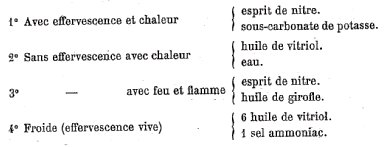
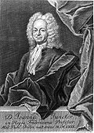
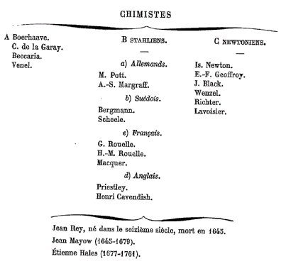
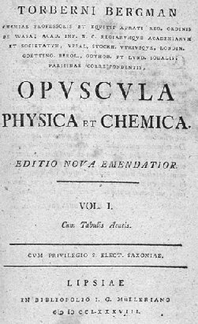
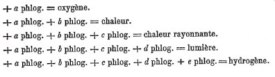
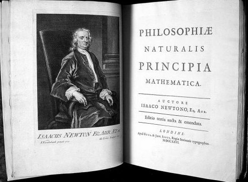

revu le 2 août 2004L'idée alchimique
4ème partie
II. Travaux historiques de Chevreul - 3ème partie
è QUATRIÈME ÉPOQUE. suite - CHAPITRE DEUXIEME. - STAHL [PREMIÈRE SECTION : CONSIDÉRATIONS GÉNÉRALES PRÉLIMINAIRES - § I - § II - DEUXIÈME SECTION : CONSIDÉRATIONS SUR DES POINTS SPÉCIAUX - § I - § II. De l'éther et de l'eau pour Stahl - § III. Du phlogistique de Stahl - § IV- De la fermentation - TROISIÈME SECTION : RÉFLEXIONS SUR LA FERMENTATION - § I - Différence des opinions de Becher et de Stahl - § II - complication des faits divers compris dans la fermentation alcoolique des liquides sucrés.] Quelques considérations historiques : PREMIÈRE EPOQUE. — Antérieure l'alchimie. DEUXIÈME ÉPOQUE. — Alchimie. TROISIÈME ÉPOQUE. —conclusion Ferment et fermentation depuis Stahl - IVe CHAPITRE COMPLEMENTAIRE RELATIF A DES ALCHIMISTES ET A DES CHIMISTES -
è CINQUIEME EPOQUE - A. CHIMISTES [BOERHAAVE - MAROT, COMTE DE LA GARAYE - BECCARI - VENEL] - B CHIMISTES STAHLIENS [POTT. MARGRAFF] - b) CHIMISTES SUÉDOIS. [BERGMANN. SCHEELE] c) CHIMISTES FRANÇAIS [ROUELLE. MACQUER] d) CHIMISTES ANGLAIS [PRIESTLEY. CAVENDISH. NEWTON. GEOFFROY]

EXTRAITS
du tome XXXIX des Mémoires de l'Académie des sciences
II.Travaux historiques d'Eugène Chevreul - sous-section n°3 - suite -
GEORGE-ERNEST STAHL. 1660 - 1734.
195. On ne connaîtrait pas Stahl si l'on ignorait qu'il fut précédé de Becher, et qu'on n'eût pas lu attentivement les écrits de cet alchimiste, et principalement sa Physique souterraine. Si Becher fut considéré comme un homme de génie par un assez grand nombre de ses contemporains, je rappelle que Stahl contribua, sinon à faire sa réputation, du moins à la consolider par un jugement qui l'honore, mais exagéré évidemment. Une cause a contribué à cette exagération, c'est que Stahl, à mon sens, ne connaissant que très imparfaitement les écrits des anciens alchimistes, s'abstint de les examiner comparativement avec ceux de Becher, fait qui n'a pas lieu de surprendre, Stahl n'ayant jamais donné dans les chimères de l'alchimie.
196. Le premier fait qui s'est présenté à ma pensée, après l'étude à laquelle j'ai soumis Becher, est l'attention donnée par Stahl à la terre inflammable de cet auteur. [la terre inflammable de Becher correspond au Soufre des Philosophes -] L'esprit de Stahl aperçut très-bien que la doctrine des deux natures de corps simples de Becher, la nature du fluide humide, comprenant l'eau et l'air, et la nature terreuse, comprenant les terres vitrifiable, inflammable et mercurielle, pas plus que les quatre éléments et les trois principes immédiats des métaux, le soufre, le mercure et le sel des alchimistes, n'expliquaient le phénomène moléculaire ou chimique le plus ordinaire, le feu artificiel. En effet, la chose principale sur laquelle se concentrait la pensée des alchimistes était le ferment doué de l'action caractéristique de convertir une matière en sa propre nature; le point de départ des alchimistes était la pâte levée, ferment, qu'ils voyaient tous les jours convertir la pâte de farine qu'on vient de préparer en sa propre substance, et de là, pensaient-ils, la préparation de la pierre philosophale, ferment doué de la propriété, croyaient-ils, de convertir les métaux imparfaits, le plomb, l'étain, le cuivre et le fer en métaux parfaits, l'or ou l'argent; et nous avons vu Becher, dont la foi en l'alchimie était parfaite, considérer, d'après la logique la plus sévère, le feu comme un ferment et la combustion comme une fermentation, le combustible se changeant en feu par le fait même qu'il brûlait !
197. Il y a loin, sans doute, des idées de Becher à une théorie chimique telle que l'imagina Stahl, en expliquant d'abord la fermentation (1697), par un simple mouvement des molécules de la matière fermentescible, et en étendant la même théorie à la combustion. Si Je crois être dans le vrai en montrant comment Stahl fut conduit, par l'étude de la Physique souterraine, à aller de la fermentation à la combustion, montrons maintenant comment la rectitude de son esprit, l'ayant préservé des chimères de l'alchimie, l'amena, tout en passant de la fermentation à la combustion, à des idées, inexactes sans doute, mais incontestablement scientifiques, et sous ce rapport fort différentes de celles de Becher et du reste des alchimistes.
198. Des études récentes m'ont offert Becher et Stahl sous des aspects bien divers, eu égard aux actes chimiques de la fermentation et de la combustion; en outre, l'examen du phlogistique et de la théorie de la combustion de Lavoisier m'a donné à penser que les faits détaillés de ces études exigeaient, pour être clairement compris du lecteur, et, dès lors, avoir quelque valeur, d'être précédés de généralités propres à coordonner ces détails et à mettre en évidence quelques vérités nouvelles du ressort de l'histoire de la chimie.
Georg Ernestus Stahl
CONSIDÉRATIONS GÉNÉRALES PRÉLIMINAIRES.
<>A. Un point de l'histoire de la. matière qu'il ne faut pas perdre de vue, s'est que, depuis Geber jusqu'à Becher inclusivement, l'alchimie fut stationnaire, lorsqu'on en suit le développement jusqu'au terme où la science des actions moléculaires au contact apparent, la chimie, se montre au comble de la théorie et de la pratique. [on peut dire que la doctrine des alchimistes n'a pas varié, au sens où la cabale leur faisait toujours désigner les matière cachées sous les substantifs propres de Mercure, Soufre et Sel. Mais entre Geber et Becher, les alchimistes ont fait maintes trouvailles dans le domaine de la chimie et les ont appliquées à leur Art. De ce point de vue, on peut donc considérer que l'alchimie a évolué au fil du temps -] Effectivement, si Becher reproche à ses prédécesseurs leur impuissance à retirer leurs éléments des mixtes que ces éléments constituent, et de plus, le soufre, le mercure et le sel d'aucun des métaux qui en sont censés formés, Becher est passible du même reproche quand il s'agit de retirer d'aucun des métaux la terre vitrifiable, la terre inflammable et la terre mercurielle que Becher considère comme en étant les éléments. Stahl ne fut point alchimiste ; malgré son mérite incontestable d'avoir cherché à fonder une théorie sur la production artificielle du feu, le phlogistique, [rappelons que le phlogistique correspond au gaz hydrogène et l'air fixe au gaz carbonique -] il ne créa qu'une hypothèse tout à fait conforme à son origine ; et, en effet, à l'exemple de ses prédécesseurs, la simple observation lui paraissant suffisante dans l'interprétation des faits, explicitement il renonça au contrôle expérimental.En définitive :
- Analyse et synthèse CHIMIQUES, NULLES chez les alchimistes, Becher et Stahl.
- Analyse et synthèse MENTALES, SEULES pratiquées par eux.Résultat final :
Erreur, conséquence du vice de logique appelé pétition de principe.
<>B. Des propositions, des observations, des objections, à diverses époques, s'élevèrent contre l'alchimie; mais ce ne fut qu'à partir de 1717 que Newton signala une attraction moléculaire agissant au contact apparent des particules matérielles, atomes ou molécules, formant des agrégats lorsque les molécules étaient d'une même nature, simple ou composée, l'attraction alors était qualifiée de cohésion; ou formant des combinaisons, lorsque les molécules unies étaient de nature différente ; l'attraction en ce cas était qualifiée d'affinité. Empressons-nous d'ajouter qu'en 1718, Étienne-François Geoffroy fît connaître l'affinité élective. Black, en 1767 et 1766, fit des découvertes importantes sur la chaleur latente et les alcalis carbonates. Enfin, Bergmann, Scheele, Priestley et Henri Cavendish, tout en admettant le phlogistique, enrichirent la science de découvertes capitales, qui contribuèrent beaucoup à la formation de la première théorie chimique que Lavoisier devait fonder. En définitive, grâce à la grande pensée de Newton, un pas immense fut fait relativement aux causes motrices des particules matérielles. Celles-ci cessèrent d'être uniquement mises en mouvement par des forces mécaniques agissant de l'extérieur, ou par des forces imaginaires agissant à l'intérieur, comme celles dont Aristote avait parlé. [il ne semble pas que Chevreul ait su que Newton était alchimiste. Comme nous l'avons dit ailleurs, ce fut une magnifique occasion ratée...Nous avons discuté du cas de Newton dans de nombreuses sections. que le elcteur veuille bien s'y référer - recherche -] On verra que Stahl a envisagé la mécanique chimique en cartésien, tandis que Lavoisier l'envisagera en newtonien. [c'est très justement dit et nous n'avons pas cessé, dans nos études - avant que nous ayons su que Chevreul préconisait la même attitude - de proner la « méthode newtonienne » - cf. Alexandre Koyré, Etudes Newtoniennes, Gallimard, Paris -]CONSIDÉRATIONS SUR DES POINTS SPÉCIAUX.
§ I - Des éléments et des corps complexes selon Stahl.
199. Becher, à mon sens, le dernier des alchimistes dont les écrits aient une valeur réelle, a été l'occasion pour Stahl, incrédule en alchimie, de fonder l'hypothèse du phlogistique qualifiée souvent de première théorie chimique. Pour que le lecteur comprenne comment la terre inflammable, élément de la nouvelle alchimie de Becher, est devenue le phlogistique, il est nécessaire d'entrer dans quelques détails relatifs à des propositions qui appartiennent essentiellement aux connaissances alchimiques, et qu'il faut connaître avant d'exposer la grande œuvre de Lavoisier, si l'on veut en apprécier toute la grandeur.
200. Stahl avait adopté en principe la distinction de plusieurs ordres de composés, après avoir reconnu des corps simples qu'il considérait comme principes ou éléments. Il admettait avec Becher quatre ordres de composés :- Ier ordre. Les mixtes ; des éléments unis ensemble :
- 2ème ordre. Les composés proprement dits ; mixtes unis ensemble ou avec un élément :
- 3ème ordre. Les décomposés; composé uni avec un mixte :
- 4ème ordre. Les surdécomposés ; un décomposé uni avec un corps quelconque.
<>Il est vrai qu'à l'exemple de Becher, Stahl n'a fait aucune application scientifique précise de ces distinctions aux corps qu'il considérait comme complexes, et, pas plus que lui, il n'en donna le motif; mais on le trouve si l'on se rappelle les paroles de Geber que j'ai citées plus haut relativement à l'opinion des alchimistes pour qui le soufre, le mercure, et le sel (remplaçant l'arsenic de Geber) étaient formés, chacun, des quatre éléments, et tous les trois entrant dans la composition des métaux, manière de voir qui, dans le langage moderne, revient à dire qu'ils en étaient les principes immédiats, ainsi que je l'ai dit plusieurs fois. Geber ajoute, pour prévenir probablement la question de ceux qui demanderaient la preuve que les quatre éléments entrent dans la composition du soufre, du mercure et du sel, qu'il y a impossibilité d'en séparer les quatre éléments, par la raison que ceux-ci y sont mêlés par leurs parties les plus ténues (152). Voilà l'aveu explicite de l'impuissance de l'analyse alchimique et la preuve que les alchimistes mettaient leur hypothèse principale en dehors de tout contrôle expérimental, conformément au principe de l'A PRIORI le plus absolu. [on trouve cependant des analogies avec le caractère composé des protons, des neutrons et des électrons. On suspectait auparavant qu'ils étaient sécables sans arriver à donner un nom à leurs composés. C'est Gell-Mann qui proposa le nom de quark, en référence au Finnegans Wakes de James Joyce -]
201. Et des siècles après Geber, Stahl, en parlant des corps simples, des éléments, reconnaissant que la nature ne nous les offre point à l'état de pureté, isolés de tout autre corps, au lieu d'insister sur la nécessité de les bien connaître en les isolant de toute matière étrangère à leur nature, se contenta d'avoir reconnu l'impuissance de l'analyse chimique, pour arriver ensuite à la conclusion, qu'en réalité ils peuvent être CONÇUS comme distincts PAR LA PENSÉE ; conclusion émanée du même esprit que la proposition précédente. [là encore, ce n'est point autrement que concevaient les atomistes du XXe siècle, lorsqu'ils voulaient se représenter une particule élémentaire. Voyez le débat sur la théorie quantique et l'opposition Bohr - De Broglie - Le concept de réalité avait changé mais les questions posées étaient, au fond, superposables -]
202. Mais, si Stahl avait reconnu l'impuissance de l'analyse chimique de son temps, s'il avait reconnu l'impossibilité d'appliquer la distinction des quatre ordres de composés de Becher, tout après l'avoir adoptée, il garda le silence sur l'idée qu'avait publiée Newton en 1717, relative à l'attraction moléculaire au contact apparent, force à laquelle l'illustre savant anglais ramenait, et la cohésion des particules homogènes, et l'union des particules de nature diverse constituant un composé chimique : idée fortifiée l'année suivante (1718) par une table de rapports que publia Étienne-François Geoffroy. Certes, si Stahl eût fixé son attention sur ces écrits, il n'eût pas persévéré dans l'assimilation de la combustion à la fermentation, en les considérant toutes les deux indistinctement comme des simplifications d'une matière composée produite par un pur mouvement mécanique dont la cause était externe; et Stahl, après avoir dit instrumentum chymise est motus, aurait cherché à voir en quoi consistait le repos qui succédait au mouvement, soit que ce mouvement donnât lieu à une ANALYSE, à des corps séparés, soit qu'il donnât lieu à une SYNTHESE, à un corps composé. Qu'il en eut été ainsi, Stahl aurait été conduit à la distinction que j'ai faite dans les actions chimiques de phénomènes passagers et de phénomènes permanents ; les premiers portent sur l'émission de la lumière, la chaleur, l'électricité, le changement de volume, la détonation, le froid, etc. ; et les seconds sur les propriétés des corps simples ou combinés, comparées aux propriétés que les corps présentaient avant l'action.
Voilà un exposé exact de faits coordonnés au point de vue historique ; interprétons- les conformément aux principes critiques du ressort de la méthode A POSTERIORI expérimentale.
203. Les alchimistes admettaient sans peine les quatre éléments dans tous les corps composés, mais leur attention se fixait incontestablement sur les métaux, de préférence à tous autres corps. Si en réalité les quatre éléments correspondaient aux quatre états d'agrégation moléculaire, leur théorie de la transmutation exigeait des rapports d'intimité plus grande entre les métaux qu'entre tous les autres corps non métalliques ; de là l'idée de considérer le soufre, le mercure, le sel, comme des mixtes formés chacun de quatre éléments, et constituant à leur tour les métaux. [les correspondances peuvent s'établir comme suit : - Soufre = feu + air - Mercure = eau + air - Sel = terre - voir section cristallogénie pour des détails plus amples -] Ne perdons pas de vue que, dans l'impuissance où ils étaient de recourir à l'analyse chimique telle que nous la connaissons aujourd'hui, ils pensaient-être dans le vrai dès que leur attention s'était fixée sur une propriété; de cette propriété qu'ils avaient observée dans un corps qui la manifestait au plus haut degré, ils concluaient la présence de ce corps dans toute matière qui la leur présentait.- a) Or, l'éclat et l'opacité, de tout temps, ont passé pour des propriétés caractéristiques des métaux. De là le rôle attribué au mercure par les alchimistes, et sa densité, le rapprochant de l'or, le métal par excellence, venait à l'appui de son excellence comme principe immédiat des métaux. Enfin son éclat, son opacité, cette liquidité qu'il possède dans une si grande étendue de l'échelle thermométrique, était encore un argument en faveur de sa présence dans les métaux que le feu liquéfiait.
- b) Le soufre depuis longtemps avait attiré l'attention par sa combustibilité et sa volatilité ; de là l'expression si ancienne de rapporter toute combustibilité au principe sulfureux, et cette manière de voir est reproduite dans les écrits de Becher, puisqu'il considère les expressions de principe sulfureux et de principe inflammable comme synonymes. Mais le soufre avait bien une autre importance pour l'alchimiste : c'était sa couleur jaune, rappelant celle de l'or, du métal parfait, tandis qu'une extrême blancheur rappelait et le mercure et l'argent. [les alchimistes ont d'ailleurs voué l'astre lunaire, blanc, à la fois au mercure et à l'argent. Mais c'est selon qu'elle est envisagée dans son premier ou dans son dernier quartier -] Le soufre devait donc à sa couleur une puissance teignante qu'il ne partageait ni avec le mercure ni avec le sel, les deux autres principes immédiats des métaux.
<>- c) Geber avait considéré l'arsenic comme le troisième principe immédiat des métaux, et cela surtout à cause de plusieurs propriétés analogues à celles du soufre. Mais n'oublions pas que la chimie de Geber consistait principalement dans les opérations du ressort de la voie sèche.
204. Il n'est donc point étonnant qu'au XVIe siècle, où les opérations chimiques du ressort de la voie humide étaient si fréquentes, où les corps sapides, solubles dans l'eau, d'une densité moyenne, avaient attiré l'attention, il n'est donc point étonnant, dis-je, que les alchimistes fussent conduits, surtout par les écrits d'Isaac le Hollandais et ceux qui portent le nom de Basile Valentin [1, 2, 3, 4,], à considérer le sel comme un principe immédiat des métaux qui devait remplacer L'arsenic. [le SEL, rappelons-le, est le CORPS du lapis : les alchimistes le nomment d'habitude le corps de la magnésie, c'est-à-dire de l'aimant. Les hermétistes l'appellent salamandre] L'homme qui contribua le plus, incontestablement, à donner au sel l'importance dont il a joui à partir d'Isaac le Hollandais et de Basile Valentin, est Paracelse, cet homme si habile pour appeler et fixer l'attention publique sur sa personne et ses écrits. Et n'oublions pas l'importance qu'il donnait à la quinte-essence de Raymond Lulle et de Rupescissa, en même temps qu'il appelait l'attention sur le sel, et qu'il introduisait dans la science le flegme et le caput mortuum, conséquence du but qu'il voulait atteindre en s'occupant des êtres vivants au point de vue de la médecine. De nouvelles considérations et des détails historiques sur Stahl et sa doctrine sont d'une nécessité absolue pour apprécier au fond la grande différence qui sépare l'hypothèse du phlogistique de la découverte de la théorie de la combustion de Lavoisier.
205. Autant que je puis en juger par les éditions diverses des ouvrages de Stahl que j'ai consultées, s'il avait adopté d'abord sans changement la distinction des éléments de la matière de Becher, répartis en deux natures, la nature du fluide humide comprenant l'eau et l'air, la nature terreuse, comprenant la terre vitrifiable, la terre inflammable et la terre mercurielle, le temps modifia ses idées quant à la nature des éléments, comme on peut le voir, si l'on compare la Zymotechnia fundamentalis, édition de 1715, avec les Fundamenta chymiae de 1732. Le nombre des éléments s'est accru, et la prépondérance des idées physiques sur les idées chimiques, qui, dès l'origine, distinguait ses opinions de celles de Becher, s'est prononcée davantage par les réflexions des dernières années de sa vie. Dans les actions moléculaires du domaine de la chimie, les phénomènes qui l'occupent le plus sont ceux que j'ai appelés passagers, afin de les distinguer de ceux que j'appelle permanents (202). Les premiers s'accomplissent pendant l'action, ce sont les changements de température, de volume, etc.; les seconds se constatent après l'action, en comparant alors les propriétés des corps à celles qu'ils avaient avant l'action, soit qu'ils proviennent d'une analyse, soit qu'ils proviennent d'une combinaison, et c'est le cas le plus important. Or, toutes les personnes qui connaissent ma distribution des sciences du domaine de la philosophie naturelle verront que l'étude des premiers phénomènes est particulièrement l'objet de la physique, tandis que l'étude des seconds appartient essentiellement à la chimie.
<><>
Georgii Ernesti Stahlii, Opusculum Chymico-Physico-Medicum. Nuremberg, 1715
<>§ II - De l'éther et de l'eau pour Stahl.
206. C'est la pente des idées précédentes qui évidemment l'a conduit à admettre en dernier lieu DEUX FLUIDES :
l'éther (corps impondérable) et l'eau (corps pondérable).
I. Ether. [1, 2, 3, 4, 5, 6, 7, 8,]
Il le considère comme le plus fluide et le plus actif des éléments. Est-il en repos ? c'est le froid. Est-il en mouvement modéré ? c'est la chaleur. Si le mouvement a une certaine vivacité et qu'il soit rectiligne, c'est la lumière. II est l'intermédiaire de la chaleur et de la lumière que nous rapportons au soleil, astre doué au plus haut degré de la faculté de le mettre en mouvement. Stahl considère l'éther comme la partie la plus pure de l'atmosphère. La partie impure se compose de la vapeur d'eau et de toutes les exhalaisons du globe terrestre ; et cette partie impure comprend des parties solides ou poussières excessivement divisées, parmi lesquelles Stahl reconnaît explicitement le phlogistique; mais, s'il s'y trouve en mouvement, il ne produit que de la chaleur. La constitution qu'il attribue à l'atmosphère, dans les derniers temps de sa vie, montre que l'âge, loin de l'avoir rapproché d'une théorie de la combustion fondée sur une combinaison de l'air ou d'une de ses parties seulement avec le combustible, l'en éloignait pour ainsi dire à toujours, puisqu'on définitive il refusait à l'air, ou plutôt à l'atmosphère, la propriété de s'unir à aucun corps, opinion déjà émise par van Helmont (108). Il eût été désirable que Stahl se fût expliqué plus clairement relativement à l'élasticité qu'il reconnaît à l'air, à la vapeur de mercure et à la vapeur d'eau; mais, quand on lit ses derniers ouvrages, on ne s'explique pas clairement le rôle précis et distinct qu'il attribue d'une part à l'air considéré indépendamment de l'éther, surtout quand, le considérant comme le plus subtil des fluides, il admet qu'il entre dans la composition des corps, tandis que l'air, moins subtil et moins actif, ne s'y combine pas, comme je le dirai dans un instant. Stahl, après avoir parlé de l'éther et avoir amoindri beaucoup l'importance qu'il avait attribuée à l'air comme moteur dans la fermentation et dans la combustion, parle de l'eau, son second fluide.
Elle est le médium et le véhicule de l'élément le plus inférieur, le plus dense, la terre, et de l'élément le plus éthéré, le céleste. Elle est le lien d'union et de conjonction de tous les éléments ; il va jusqu'à dire qu'elle est la matière de tous les corps. [les alchimistes parlent à peine différemment lorsqu'ils traitent de leur Eau permanente, qui est le Mercure philosophique -]
Stahl lui accorde donc une extrême importance dans la mixtion, en d'autres termes, dans la combinaison chimique. Elle entre, dit-il, dans la combinaison de tous les corps ; il cite la Genèse, Thalès de Milet et van Helmont. Mais, en citant ce dernier, il est loin de refuser toute activité à l'eau dans les actions moléculaires ; il est muet sur sa conjonction avec les diverses archées qui, selon van Helmont, constitue la diversité de nos espèces chimiques (109). Il lui accorde au contraire une extrême influence comme force élastique, expansive, quand elle se réduit en vapeur; s'il considère le phlogistique en mouvement comme le FEU, ensemble de chaleur et de lumière, c'est à l'expansion de la vapeur d'eau qu'il attribue la flamme lorsque celle-ci disperse les particules déliées du phlogistique dans l'espace. Stahl, après avoir compté l'éther et l'eau comme deux éléments, et distingué quatre éléments terreux : la terre vitrifiable, la terre calcaire, [cf. section Mercure de nature sur la question des zones de partage entre les roches calcaires et les roches trapéennes -] la terre saline-vitrifiable, et enfin la terre inflammable ou le phlogistique, dit que les MIXTES, objets de la chimie, sont formés de terre, d'eau et d'ÉTHER, et que d'eux émergent les principes principiés ou concrets qui concourent à la composition des corps. Stahl, tout en en comptant trois avec les alchimistes, le soufre, le sel et le mercure, distingue explicitement celui-ci des deux premiers par cette phrase :« Mercurius spectat vel ad aetherem vel ad ipsam aquam. »
Il est entendu qu'il ne compte plus, avec Becher, la terre mercurielle parmi les éléments. [cette terre mercurielle n'a disparu qu'en apparence ; elle est remplacée par la terre saline-vitrifiable, mélange de silice et d'alcali -]
§ III. Du phlogistique de Stahl et de la combustion selon lui.
207. La combustion, pour Stahl, étant une analyse, la séparation totale ou partielle du phlogistique, le produit de la combustion était dès lors pour lui moins complexe que le corps brûlé; dans sa pensée, le silicium, le calcium et le combustible dont la combustion produisait la terre qu'il nommait saline-vitrifiable, [voila un exemple de « surdécomposé » de Becher -] devaient être des composés de ces corps incombustibles, silice, chaux et terre vitrifiable-saline avec le phlogistique; et à ces corps, qu'il comptait comme corps simples déphlogistiqués, il fallait ajouter les peroxydes [un exemple de « décomposé » de Becher -] de tous les métaux et de tous les corps considérés aujourd'hui comme simples. Cette conséquence de l'hypothèse du phlogistique était celle que beaucoup de phlogisticiens n'ont pas comprise, ou du moins exprimée : c'est qu'il devait y avoir autant d'éléments que de combustibles, appelés aujourd'hui métalloïdes et métaux, qui auraient été dépouillés par la combustion de la totalité de leur phlogistique. Je ne puis trop insister sur cette opinion de Stahl, pour qui la combustion est la simplification d'une matière complexe formée de phlogistique et d'une matière incombustible quand elle en a été entièrement dépouillée. Comment concevoir avec Stahl que la lumière et la chaleur, phénomènes purement mécaniques dus au mouvement imprimé au phlogistique par l'éther ou l'air, comment concevoir, dis-je, qu'il n'existe qu'un phlogistique lorsque nous voyons tous les corps qui conservent l'état solide ou liquide, comme la brique, par exemple, devenir incandescents dans un foyer ? Évidemment la terre inflammable, imaginée par Becker pour devenir l'aliment du feu qui le transforme, en sa qualité de ferment, en sa propre substance, est bien plus compréhensible.
§ IV- De la fermentation et de la part que Stahl attribue à l'éther dans le phénomène.
208. Voilà, je crois, une interprétation des opinions de Stahl, aussi exacte que le permet la clarté de ses écrits, qui est loin d'être parfaite quand il s'agit d'écrits postérieurs destinés à ajouter quelque chose aux écrits antérieurs, et surtout encore quand il s'agit d'opinions nouvelles apportant quelques modifications à des idées anciennes ; c'est alors qu'une critique consciencieuse est difficile. Quoi qu'il en soit, à mon sens, rien de plus intéressant dans l'étude biographique des hommes de génie dont l'invention porte sur une hypothèse sinon absolue, du moins eu égard à un nombre plus ou moins grand d'idées nouvelles, que de suivre les modifications que le temps apporte à leurs idées premières. Ainsi la grande préoccupation de Stahl n'est pas la combinaison des corps, mais l'observation des corps qui, agissant les uns sur les autres, développent des forces ; or, comme il n'a point fixé son attention sur les idées de Newton et d'Étienne-François Geoffroy relatives aux forces qui tiennent unis les particules, les molécules, les atomes de la matière, ce n'est point dans l'affinité élective qu'il cherchera une force douée de quelque influence dans les changements d'équilibre capables de modifier la constitution des corps dans des circonstances données. Il cherchera uniquement les causes des désunions, des décompositions, et il s'occupera uniquement des forces qui mettent les molécules en mouvement. Sous ce rapport, rien de plus curieux que le rôle qu'il fait jouer à l'éther dans la fermentation; mais, avant de parler de la manière de le considérer, ne perdons pas de vue les opinions de Stahl et de Becher sur la combustion afin de parler encore de la fermentation. Si Becher d'abord, et Stahl ensuite, furent conduits à rapprocher la fermentation de la combustion, la différence était grande dans l'in terprétation de chacun d'eux de ces actes moléculaires, comme nous venons de le rappeler. [il n'est pas sans intérêt de rappeler le problème que suscitait la théorie de la gravitation de même que l'attraction ou que la répulsion de substances chimiques les unes par rapport aux autres. On parlait d'attirance occulte et Newton lui-même avait écrit : « hypothesis non fingo », ce qui veut dire : « je ne feins point d'hypothèse ». Ce qui était une façon de s'exprimer tout à fait nouvelle dans le domaine de la physique et qui se démarquait de la méthode cartésienne - ]
Pour Becher, la transmutation d'un métal imparfait en métal parfait, comme la combustion, était l'acte en vertu duquel un corps appelé ferment en convertissait un autre en sa propre matière, soit un métal imparfait, soit un combustible. [cette réflexion de Chevreul est importante. Elle montre que dans la doctrine alchimique orthodoxe, celle des transmutations, la pierre philosophale doit contenir une parcelle du métal que l'on veut obtenir, de l'or ou de l'argent. C'est le principe même du levain et de la pâte à lever. Ce n'est pas là l'hypothèse que nous défendons dans ces pages -]
Stahl, n'admettant point la réalité de la transmutation, expliquait la fermentation de la pâte et la fermentation des substances sucrées d'une manière toute physique, à savoir par un mouvement moléculaire, en vertu duquel une matière complexe se simplifiait en se réduisant en des corps moins complexes qu'elle. Or, précisément, c'est ce mouvement moléculaire, en vertu duquel se produisait la fermentation, que l'éther déterminait. Plus ténu, plus mobile, plus actif que l'air, il est pourtant, selon lui, considéré comme un élément des corps ; et lorsqu'il s'agit de la fermentation, l'éther agit du dehors sur l'éther que contient la matière fermentescible en vertu d'une sorte de viscosité. Avant de faire intervenir l'éther dans la fermentation, il avait auparavant attribué un rôle analogue à l'air atmosphérique, et c'est plus tard qu'il parla, de l'éther de l'atmosphère agissant sur l'éther emprisonné dans le liquide fermentescible par une sorte de viscosité. Effectivement, Stahl avait commencé par admettre qu'aucune liqueur homogène n'était susceptible de fermenter ; qu'elle devait être composée de particules salines, huileuses et terreuses, auxquelles il ajoute plus tard des particules acides et sulureuses, et il attribue en outre les premiers mouvements à la ressemblance des parties. C'est sans doute le principe des semblables, mis si souvent en avant par Platon, qui le conduisit, l'éther une fois admis, à le reconnaître dans les liqueurs fermentescibles :
« Motor autem principalis aether est in particulis illis concentratus, subque harum viscosa textura latitans, qui adjutus aetheris motu calido externo sese expandit, et claustra illa, quibus innexus fuerat, perrumpere tentat (Page 26, Fundamenta chymiae, édition de Nuremberg, 1732.)... »
Enfin n'est-il pas remarquable que Stahl, au-dessus des chimères alchimiques, ait poussé si loin l'idée de la subtilité de la matière pour dire (Page 134, Fundamenta chymiae, édition de Nuremberg, 1732.) :
« Siquidem ipse lapis sic dictus philosophorum nihil aliud est quam aurum fermentatione metallica velut in spiritum maxime agilem et penetrantem redactum. Quod tamen hujus loci non est demonstrare. »
Toujours le mouvement, le choc et la pénétration ! N'est-ce pas là un des exemples les plus clairs du retour d'un esprit supérieur sur des opinions qui n'ont jamais été les siennes ; mais dans les méditations où il se complaît une occasion se présente, l'idée qui l'occupe a quelque analogie avec telle autre qui n'a jamais été sienne, et l'association des deux idées, ainsi faite, s'exprime au grand étonnement de ceux qui ne voient qu'une inconséquence dont la cause leur échappe. [c'est mettre en avant l'imagination et l'invention scientifiques, défendues par Gérald Holton dans deux superbes ouvrages - seuls les génies possèdent à la fois l'une et l'autre à un haut degré. Or, l'imagination est du ressort du sentiment et l'invention, du ressort de la raison. Il est par conséquent évident qu'une part d'irrationalité est à l'oeuvre dans le cheminement d'une idée scientifique. Nous conseillons, à cet égard, la lecture des oeuvres de Paul Feyerabend, Contre la Méthode et Adieu la raison, [Seuil, Paris] qui sont des brûlots pleins de salubrité intellectuelle et de richesse humaniste -]
209. En disant plus haut (186) que Becher avait considéré le FEU comme un ferment, et la combustion d'une chandelle comme une fermentation, j'ai émis la conjecture que ce rapprochement entre la combustion et la fermentation avait pu exercer quelque influence sur Stahl qui, à la fin du XVIIe siècle, avait publié un long travail sur la fermentation des liquides sucrés. On n'ignore pas que c'est postérieurement à ce travail qu'il examina la combustion et qu'il crut l'avoir expliquée en empruntant à Becher sa terre inflammable, qu'il appela phlogistique. [ce qui permet de poser les identités suivantes : terre inflammable = phlogistique = hydrogène -] Ma conjecture peut être vraie, mais ce serait se tromper étrangement si on me supposait l'intention d'établir la moindre analogie entre la manière de voir de Becher et celle de Stahl ; loin de là : voici l'analogie : la combustion est pour le premier une fermentation, et le second admet une grande analogie entre la combustion et la fermentation, mais cette analogie est toute différente de la manière dont Becher envisage les deux actes chimiques.
[que peut représenter la fermentation - ou le ferment - dans le cadre de notre « idée alchimique » ? Ce ne peut être que le Mercure philosophique sous forme de Compost - Mercure préparé avec le Rebis -, qui par accrétion progressive avec le Corps - le Sel de Paracelse ou l'Arsenic de Geber, c'est-à-dire le Soufre blanc de Fulcanelli - va progressivement faire mûrir la pierre, par accroissement progressif. Cet accroissement est en rapport avec l'accrétion progressive des deux Soufres. Et cette opération, par la voie sèche, exige une attention toute particulière dans le degré du calorique et la conduite du feu dans le temps. C'est la raison pour laquelle l'un des dessins sculptés de Notre-Dame de Paris représente un personnage, l'air un peu las, nous
dit Fulcanelli, qui contemple deux roues prises dans un engrenage intriqué. La 1ère roue est la jauge qui permet de mesurer la quantité de calorique ; tandis que la 2ème roue est celle du temps qui passe, qui permet de jauger la qualité du calorique. Cette double roue est donc l'expression typique de la fermentation, conduite - nous le répétons - par la voie sèche - cf. section du Mercure -]
Évidemment Becher, appliquant l'hypothèse alchimique du ferment au feu et à la combustion, était plus près de la vérité que Stahl ; car l'assimilation du combustible au feu n'était point en contradiction évidente avec la synthèse: tandis que pour Stahl, qui n'était point alchimiste, si la fermentation d'une liqueur sucrée présentait bien un cas de simplification de nature dans le corps complexe fermentescible, par là même c'était une erreur manifeste que de l'assimiler à la combustion, puisqu'il est démontré, grâce à Lavoisier, que cet acte chimique est une combinaison, une synthèse, et non, comme le croyait Stahl, une analyse, la séparation d'un prétendu corps, le phlogistique, d'avec une matière incombustible, matière simple quand elle avait perdu tout son phlogistique (203), [ce qu'écrit Chevreul au sujet de la combinaison, de la synthèse, vaut évidemment pour la synthèse cristalline des alchimistes - cf. travaux de J.J. Ebelmen, de H. Sainte-Claire Deville, de M.A. Gaudin, d'E. Frémy, etc.]
RÉFLEXIONS SUR LA FERMENTATION.
210. Après avoir lu et relu les chapitres relatifs à Becher et à Stahl tels qu'ils sont rédigés, il m'a semblé qu'il manquait quelque chose à la parfaite clarté de quelques idées qui y sont exprimées, et que la lacune tenait au silence que j'ai gardé sur les sens si divers du mot fermentation; sens qui, s'il est le même pour les anciens alchimistes et Becher, auteur de la nouvelle alchimie, est si différent pour Stahl et pour de nombreux savants qui s'en sont servis sans le définir, et cette diversité s'explique par l'analyse mentale, appliquée à la diversité des phénomènes ou des faits que peut comprendre le mot fermentation dont on a usé dans des cas fort divers comme s'il exprimait une seule idée. C'est avec bonheur, je l'avoue, que, profitant d'une nouvelle occasion de recourir à l'analyse et à la synthèse mentales, j'en parlerai avant tout avec l'intention de mettre en évidence une différence entre les opinions de Becher et de Stahl sur deux actes chimiques, la fermentation et la combustion, qui, jusqu'ici, n'a pas été signalée comme elle doit l'être quand il s'agit de prévenir toutes les objections.
[sans avoir lu la suite, on voit déjà que la question à résoudre va impliquer la voie utilisée - sèche ou humide - et que cela aura une influence radicale quant au sens à attribuer au mot « ferment » pris dans le sens de la doctrine alchimique. Car nous avons vu que dans ce que nous appelons la théorie orthodoxe - les transmutations - il est nécessaire qu'une parcelle du métal que l'on désire obtenir - or ou argent - soit présent dans la matière même de la pierre, en puissance tout au moins. Dans ce que nous appelons la théorie réformée - les synthèses cristallines des pierres gemmes -, le ferment est l'opération même de la Grande Coction du 3ème oeuvre. Notez que dans les deux cas, le concept de ferment ne met pas vraiment en cause des objets matériels, mais plutôt spirituels. La différence cruciale, et elle est de taille, est que dans la théorie orthodoxe, le métal précieux est censé être parvenu - grâce à l'art - dans un état « quintessencié », ce qui n'est pas sans poser, de notre avis, de graves difficultés. Dans la théorie réformée, le ferment est l'expression même de la réaction chimique - liaison radicale des Soufres - et conduit à être défini comme un substantif propre selon la doctrine de Chevreul. Et il ne s'agit là point de synthèse mentale, mais bien de synthèse chimique. De surcroît, il s'agit d'une expérience A POSTERIORI répondant aux bonnes règles de la méthode scientifique - Ce n'est pas tout. Nous n'avons pas connaissance que l'on ait analysé - en termes hermétiques - la différence d'essence entre le phénomène de la combustion et celui de la fermentation. Erreur regrettable ! Où l'on trouve, par sa correction, la signifiance des deux roues entrelacées de Notre Dame de Paris. Par la combustion, elle indique les degrés de chaleur à imposer au Compost. Par la fermentation, elle indique la durée de la Grande coction, longue et laborieuse, point des plus singuliers de l'oeuvre alchimique. Ce qui a pu faire dire à Fulcanelli que c'était là le point de démarcation entre la chimie et l'alchimie -]
§ I - Différence des opinions de Becher et de Stahl sur la fermentation et la combustion.
A. Un ferment, pour les anciens alchimistes et pour Becher, était un agent doué de la faculté de transmuer en sa propre substance une matière dite fermentescible. Ils citaient à l'appui de cette définition, et pour donner à tous une idée de leur prétendue science, l'alchimie, la préparation du pain, exemple on ne peut mieux choisi à une époque où il était préparé dans tous les ménages. Ainsi, disaient-ils, on prend du levain de pâte, c'est-à-dire de la pâte de farine de froment déjà levée, on la malaxe avec de la farine de froment et de l'eau, de manière à en former une pâte homogène, et ce mélange est levé au bout de quelques heures, tandis que la pâte sans levain, abandonnée à elle-même, ne l'eût été qu'au bout de quelques jours. Ils ajoutaient :
Nous appelons pierre philosophale une préparation qui, vrai ferment, change les métaux vils en sa propre substance, qui tient une faible quantité d'or ou d'argent auquel l'art alchimique a donné la faculté de transmuer, soit en or, soit en argent, les métaux communs. Dans le deuxième tableau de l'atlas de ce résumé, on lit plusieurs noms d'alchimistes les plus distingués, assurant que la confection de la pierre philosophale consiste à donner la vie à l'or ou à l'argent qu'on a introduit à l'état mort dans la matière propre à constituer la pierre.[Cette citation pseudépigraphe montre bien comment Chevreul comprenait le processus alchimique et combien il pouvait lui paraître à la fois naïf et parfaitement logique. C'est que, dans l'opération que décrit Chevreul, le pain - assimilé à la pierre philosophale - est le résultat combiné de la pâte de farine de froment déjà levée d'une part, et du froment lié à l'eau d'autre part. C'est le froment qui agit là à l'instar d'un catalyseur, exactement comme l'or qualifié d'introduit « à l'état mort » dans la matière propre à constituer la pierre. D'où vient, d'ailleurs que chevreul ait pris qu'on introduisait l'or ou à l'argent, à l'état mort, dans la matière de la pierre ? Alors que les Adeptes assurent qu'il faut au contraire « vitaliser » cet or ou cet argent ? Georges Ranque, dans sa Pierre Philosophale - Laffont, 1970 - a finement analysé ce processus de « vitalisation ». il ne le comprend pas au plan rationnel. Il est ainsi amené à nous donner un schéma qui n'a rien à envier avec ceux que donnent les alchimistes. Et pourtant, Ranque était loin d'être un esprit fumeux et l'on peut même assurer que ce fut un des rares commentateurs tout à fait honnête et charitable -]B. Il est visible que, conformément à l'idée que je viens de développer, rien n'était mieux raisonné que la qualification de ferment, donnée par Becher au feu, et de fermentation à la combustion d'une chandelle, car il n'y a pas d'objection possible à cette conclusion : la matière combustible n'entretient le feu qu'en se changeant elle-même en feu; il est entendu que je suppose l'alchimie une vérité. [Chevreul est expert dans l'art des formules alambiquées et tortueuses. Que veut-il affirmer ainsi ? Que l'alchimie est une vérité ou qu'elle est une erreur de bout en bout ? Sensible à ce qu'il dit par ailleurs, nous ne pouvons que conclure qu'il s'agit d'une boutade placée en a par te et qu'il considère résolument l'alchimie comme une chimère... Mais alors, que faire de son § 89 ?]
C. Stahl n'était pas alchimiste; la fermentation à laquelle il se livra au commencement de sa carrière n'était pas la panification, mais la fermentation vineuse, dont la matière fermentescible est le sucre. Or le sucre se réduisant, comme on le sait aujourd'hui, pour la plus grande partie en alcool, en acide carbonique, et, comme M. Pasteur nous l'a appris dans ces derniers temps, en acide succinique et en glycérine, et aucun de ces produits n'étant doué de la propriété de faire fermenter le sucre, on ne peut dire que le produit de la fermentation vineuse soit identique au ferment cause de cette fermentation. Évidemment, pour un véritable alchimiste, la fermentation vineuse est donc fort différente de la fermentation panaire. [voilà qui mérite éclaircissement. La difficulté vient ici du fait que c'est la voie humide qui est considérée, alors que, rappelons-le, notre hypothèse est basée avant tout sur la voie sèche. Qu'importe ! Une section sur la voie humide existe : elle a logiquement abouti aux dissolution auriques, point de départ du pourpre de Cassius et des strass colorés - voie plus spagyrique qu'alchimique il est vrai, nous n'en douterons pas -]
Stahl, étranger à l'alchimie, et, comme médecin, beaucoup plus porté à l'observation et à la spéculation qu'à l'expérience, était plus disposé par là même à envisager les phénomènes moléculaires au point de vue physique qu'au point de vue chimique, et dès lors plus disposé à suivre les vues de Descartes que celles qui avaient été suivies, en 1717, par Newton, sur la force attractive des molécules des corps au contact apparent.
§ II. Trouble porté dans les esprits par la complication des faits divers compris dans la fermentation alcoolique des liquides sucrés.
D. L'histoire d'une des branches de la philosophie naturelle n'a d'importance pour les progrès de l'histoire de l'esprit humain qu'à la condition que les faits offerts à l'historien auront été par lui réduits, sinon à l'état de simplicité, du moins à l'état de moindre complexité permis par l'ensemble des connaissances humaines de l'époque où vit l'historien. Or, la connaissance du monde de van Helmont, telle que l'offrent ses opinions, à savoir ses archées, son ferment immortel, ses ferments altérables, quoique précédant Becher et Stahl, ne peuvent donner lieu qu'à des interprétations dénuées de toute certitude, et c'est la raison pour laquelle nous nous en sommes abstenu de toute critique détaillée.
E. Il en est tout autrement d'une fermentation matérielle produite dans des circonstances déterminées, facile à reproduire en tout temps et en tous lieux, et susceptible d'être observée dans la succession du phénomène qu'elle présente jusqu'à ce qu'elle soit accomplie. Dans de telles circonstances, l'analyse mentale peut simplifier des faits et soumettre chacun d'eux à des expériences propres à conduire l'historien critique à savoir s'il est dans la voie qui conduit à la vérité.
F. Observons, par exemple, la fermentation d'un liquide sucré, et les phénomènes suivants se manifesteront.
- a) Il est limpide, sauf la levure nécessaire à la fermentation. De fines bulles se produisent; elles grossissent, gagnent la surface du liquide et se dégagent de son sein. Elles rappellent l'ébullition de l'eau placée sur le feu. Des bulles adhérentes à des parcelles de levure la soulevant, puis s'en détachant à la surface du liquide, les particules tombent au fond du liquide. Quoique la température du lieu où le liquide fermente n'excède pas 18 à 25 degrés, sa température s'élève. Si un thermomètre plongé dans le liquide n'indique pas son échauffement et que la masse soit suffisante, le toucher de la masse suffira pour rendre l'échauffement évident. Peu à peu, les bulles de gaz diminuent, la température du liquide s'abaisse, des parties solides de levure venant d'être soulevées par le gaz carbonique se précipitent au fond du vase, et enfin tout arrive à l'état primitif de repos. Voilà les phénomènes passagers.
- b) Passons aux phénomènes permanents.
<>Le liquide, de sucré qu'il était au goût, est devenu vineux et très légèrement acidulé. Il retient une partie d'un gaz qui est de l'acide carbonique identique [air fixe] à celui qui s'est dégagé du liquide et qu'on a pu recueillir dans des cloches. Il contient en outre l'alcool, qu'on peut en retirer par la distillation ; c'était la quinte-essence de Raymond Lulle. Enfin le résidu de la distillation du vin est de l'eau, du bitartrate de potasse, du tartrate de chaux, une matière azotée plus ou moins colorée, etc. [le tartrate de potasse est l'un des composants essentiels à la préparation du Mercure. Il permet notamment de préparer l'alkali fixe ou borith des Anciens - il est aussi présent dans les vinasses - cf. section voie humide -] <>- c) Les conséquences sont faciles à déduire des faits, ou phénomènes, tels que l'analyse mentale les présente, soit qu'on les envisage comme simplement passagers ou comme permanents. Ainsi, sans feu, vous observez une êbullition dans un liquide, ou une effervescence, dégagement d'un gaz. Sans feu, vous observez un liquide qui s'échauffe spontanément. Un liquide éprouve des changements de propriétés, de saveur, d'odeur, etc., etc. Eh bien, ces phénomènes, observés par des personnes étrangères à l'analyse mentale, sont confondus ensemble ; il suffit qu'un seul de ces phénomènes éveille l'attention d'un observateur vulgaire, pour qu'il en trouve la cause dans la fermentation, et, afin de justifier ma proposition, je renverrai le lecteur à un ouvrage publié en 1681 par un docteur en médecine, Jean Pascal, sous le titre de : La nouvelle découverte, et les admirables effets du ferment dans le corps humain, expliquez par des raisonnemens très-solides. Il y verra tous les phénomènes de la vie ramenés à des ferments. Il est un second livre qui parut en 1708, à Rouen, sous le titre de : Réflexions sur la fermentation, sur la nature du feu, fondées sur des expériences nouvelles, par M. Rouvière, maître apoticaire.G. Après avoir rappelé que Descartes a distingué la matière, relativement à son état de division, en matière subtile ou éthérée, en matière globuleuse et en matière rameuse, après avoir rappelé les quatre éléments des chimistes, Rouvière distingue quatre sortes de fermentation :
<>Mais ce qui m'intéresse dans l'ouvrage de Rouvière, c'est l'explication qu'il donne du froid produit par le mélange de six parties d'huile de vitriol avec une partie de chlorhydrate d'ammoniaque, tandis que les trois premières fermentations produisent de la chaleur. Rouvière attribue la chaleur au mouvement circulaire de la matière subtile renfermée dans les pores d'une matière dont les parties sont plus ou moins adhérentes les unes aux autres, et qui, gênant ainsi la direction rectiligne de la matière subtile, en obligent les parties à pirouetter sur leur axe, c'est-à-dire à prendre le mouvement circulaire, cause de la chaleur. L'idée de ce mouvement circulaire n'a-t-elle pas été puisée à la même source que le mouvement verticillaire du phlogistique de Stahl, cause de la lumière dans les actions chimiques ? Maintenant, comment explique-t-il le froid produit par le mélange de six parties d'huile de vitriol et une de chlorhydrate d'ammoniaque ? La cohésion étant nulle ou à peu près, la matière éthérée se meut en ligne droite et produit un froid analogue à l'air froid qui se meut dans le même sens. Si ces explications ne sont pas moins que des pétitions de principe, il ne m'en semble pas moins très-probable que Stahl, Rouvière, inspirés des mêmes écrits, ceux de Descartes, ont été conduits à des explications exclusivement mécaniques. Après ces considérations, rien de plus satisfaisant au point de vue de la clarté et de la précision des idées que le résumé offert aux yeux par le tableau 5 de l'atlas. L'hypothèse du phlogistique y est exposée à la partie supérieure, et la théorie de la combustion de Lavoisier au-dessous. Toutes les deux présentent (a) les phénomènes passagers, (b) les phénomènes permanents. Je regarde cette distinction comme fondamentale, et c'est pour la rendre accessible à tous les esprits que j'ai cru utile d'aider l'intelligence au moyen des linéaments que la planche présente aux yeux. 
Cette distinction des deux genres de phénomènes m'a servi cette année (1877) à faire comprendre l'extrême différence existant entre l'espèce chimique et l'espèce vivante, végétale ou animale ; je m'en suis servi avec bonheur pour montrer à tous combien Georges Cuvier avait raison lorsqu'en 1824, après avoir lu le chapitre de mes considérations sur le mot espèce, employé dans les branches diverses des sciences naturelles, il m'avait fait exprimer, par l'intermédiaire de son frère, M. Frédéric Cuvier, l'utilité qu'il y aurait pour la clarté des idées de réserver exclusivement le mot espèce aux êtres vivants.§ III. Quelques considérations historiques relatives à la manière dont on a envisagé, à diverses époques, la matière eu égard à la fermentation.
H. Il a été tant de fois question du mot fermentation dans cet ouvrage, et il est si souvent usité dans l'état actuel de beaucoup de connaissances, qu'il ne paraîtra pas inconvenant que, au terme de ma tâche, j'expose un résumé des sens divers qu'on lui a attribués depuis que les alchimistes en ont fait la base de leur prétendue science. Ce résumé est l'exposé des sens divers qu'on lui a attribués en se plaçant au point de vue de la chimie. Je distinguerai trois époques que me suscite l'ordre des matières de cet opuscule :
- 1ère époque, antérieure à l'alchimie ;
- 2ème époque, contemporaine à l'alchimie, en commençant à Geber et finissant à Becher et Stahl ;
- 3ème époque, contemporaine, commençant avec la théorie de la combustion de Lavoisier.PREMIÈRE EPOQUE. — Antérieure l'alchimie.
I. Je me garderai bien de faire un reproche aux philosophes grecs d'avoir attaché si peu d'importance à la connaissance des attributs de la matière. Dans leur ignorance de la science physico-chimique, et avec leur grand esprit réduit à la simple observation des effets ou phénomènes du monde, dans l'étude de la nature ils ne purent faire que ce qu'ils ont fait, une matière inerte dont le mouvement ne lui venait que du dehors par pression ou par choc, ou d'une substance interne d'origine divine.
<>J. J'ai montré comment l'intérêt de la richesse imagina l'alchimie, et comment, quelques siècles après, elle s'étendit à la préparation des remèdes, des médecines, des élixirs, des arcanes, afin de venir en aide aux infirmités humaines. [c'est une pétition de principe. L'alchimie, dans ses premiers temps, n'était pas animée par l'esprit mercantil ; là encore, il s'agit d'une invention du Moyen Âge avec la trouvaille de la pierre philosophale -] Évidemment ce fut la circonstance qui fixa l'attention des hommes sur une catégorie de phénomènes, dont la recherche des causes devait aboutir un jour à la science des actions moléculaires au contact apparent ; la conséquence de ces faits, bien simples au point de vue de leur rapprochement, nous montre donc, sans hypothèse, l'importance des idées attachées aux mots ferment et fermentation. Mais plus grande est cette importance, et plus grande est la nécessité de définir ces mots primitifs, auxquels tant de considérations de tous genres se rattachent dans un temps donné, et auxquels tant d'autres se rattacheront plus tard. Or, comme je l'ai dit, ici l'analyse et la synthèse mentales interviennent en faveur du véritable progrès de l'esprit humain. La première condition à remplir pour ne pas le compromettre, est de définir le sens des mots. Or, que nous a appris tout ce qui précède ? C'est que les anciens alchimistes d'une part, et d'une autre part Becher, l'auteur d'une alchimie nouvelle, exprimaient par les mots ferment et fermentation les mêmes idées ; tandis que Stahl, empruntant à Becher sa terre inflammable et lui donnant le nom de phlogistique, avait, du ferment et de la fermentation, et de la production du feu, des idées absolument différentes de celles de Becher. Ainsi ferment, pour les alchimistes et pour Becher, corps actif dont le caractère est de changer un corps passif, fermentescible, en sa propre substance, et fermentation est l'acte par lequel cette transmutation s'accomplit. [on ne voit pas en quoi réside la différence : le ferment alchimique, c'est-à-dire le Soufre rouge, transforme le corps passif féminin, le Soufre blanc - principe Sel de Paracelse, Arsenic de Geber, Soufre blanc de Fulcanelli, résine de l'or de Trismosin, notre squelette silicato-alumineux - en un corps nouveau, doué d'après les Anciens de propriétés organoleptiques spéciales et, paraît-il, du pouvoir de rendre heureux...]
Certainement ils connaissaient des phénomènes que des matières d'origine organique privées de vie leur présentaient, par exemple celui de la fermentation ; ils connaissaient le ferment (ZUMH), cause motrice de la pâte de froment qu'on veut faire lever; mais cette observation resta sans conséquence jusqu'à la seconde époque. [le ferment - zumh - correspond aussi à une idée de « ferment de la corruption » pris au sens figuré ; c'est nommer le Soufre - Mais il y a un domaine dont Chevreul n'a pas parlé : c'est celui des Lapidaires chinois qui permet, dans une certaine mesure, de montrer à l'époque réputée « antérieure » à l'alchimie qu'il existait une « proto-alchimie » si l'on nous permet ce néologisme, fondée sur le travail des pierres et du verre. Voyez l'article qui s'y rapporte - cf. aussi pour le concept de spiritus corruptus, Aurora consurgens, II]Conséquence :
<>- Le ferment de pâte change la pâte de farine en sa propre substance. [le Soufre rouge entre en accrétion au Soufre blanc et forme un complexe oxydé -] ;
- Le feu change le combustible en sa propre substance. [le Soufre résulte de l'incarnation de l'Âme, c'est-à-dire de la dissolution totale des chaux métalliques - en humide radical métallique - sous l'influence de l'Eau pontique, le serpent Ouroboros -] ; La pierre philosophale, tenant de l'or ou de l'argent, change les métaux imparfaits en or ou en argent. [la nature du Soufre blanc détermine la Pierre dans le sens d'un nésosilicate ou d'un corindon coloré - le Soufre rouge « oriente » la forme de la Pierre] Maintenant, qu'est-ce que la fermentation pour Stahl ? Une simplification, une décomposition d'une matière complexe opérée par une force purement mécanique. La force mécanique vient de l'extérieur; elle agit mécaniquement pour mettre en vibration le corps qui fait partie de la matière fermentescible et qui a le plus d'analogie avec elle-même ; de ce mouvement naît la chaleur du liquide fermentant. [remarquons l'analogie avec le comportement du Rebis plongé dans le Mercure. C'est bien une action mécanique - du moins de vertu physique - qui met en vibration les éléments du Rebis - et, comme le disait Bernard de Trévise, « la nature aime la nature », ce qui, chez Chevreul, est traduit par « qui a le plus d'analogie avec elle-même...»] <>Stahl commença par attribuer à l'air extérieur, au liquide fermentescible, la cause motrice de la fermentation ; plus tard, l'éther fut cette cause, et il admit l'existence de l'éther dans la matière fermentescible même où il se trouvait retenu par la viscosité, et je ne crois pas être dans l'erreur en disant que si plus tard il attribua tant d'influence à l'éther, c'est qu'il avait posé antérieurement, en principe, que l'air ne s'unissait à aucun corps. Tout était donc mécanique dans cette manière de voir de Stahl, et absolument différent des idées du ferment et de la fermentation des alchimistes, y compris Becher, l'auteur de la terre inflammable. Stahl ne s'en tint pas là : poussant à l'extrême son idée de la simplification, il assimila à la fermentation sa théorie ou plutôt son hypothèse de la combustion. En considérant que tout combustible était formé de deux corps : un corps combustible et un corps incombustible, la combustion était donc, comme la fermentation, une simplification chimique, en d'autres termes, la séparation totale ou partielle du corps combustible (le phlogistique) d'avec le corps incombustible. [cette idée trouve son pendant en alchimie : songeons que les époux royaux se dévêtent avant d'entrer dans le Bain des Astres. C'est-à-dire qu'une partie d'eux-mêmes ne survit pas à l'action singulière du dissolvant -] Dans l'origine, l'air n'intervenait dans la combustion qu'en communiquant un mouvement au phlogistique, corps dont les particules, essentiellement mobiles par leur division, devenaient en vertu de ce mouvement non seulement chaleur, mais lumière, si le mouvement était suffisamment rapide et verticillaire. Plus tard Stahl admit que l'éther était capable de mettre en mouvement les particules phlogistiques, et, dans ses dernière écrits, il considéra le charbon pur comme le phlogistique. [le charbon agit comme un corps très réducteur - il adoucit donc l'action du feu oxydant... Aurait-il un rapport avec le baume de sagesse ? - 1, 2, 3, 4, 5, -] Une fois ce contraste établi entre l'interprétation des mêmes faits relatifs à la fermentation et à la combustion, par les alchimistes et par Stahl, rappelons, sans sortir de la quatrième époque de l'histoire de la chimie, les idées des ferments appliquées à la médecine ou plutôt à la physiologie par le docteur Jean Pascal (1682), et les idées de Rouvière sur la fermentation (en 1708), et l'on peut dire que les quatre fermentations qu'il distingue comportent un tel degré de généralité, qu'on peut dire qu'elles embrassent toute la chimie. Quelle est la conséquence de cet état de choses ? C'est que les ferments et les fermentations étaient alors si mal définis, relativement à l'ensemble des actions moléculaires telles qu'on les envisage aujourd'hui, qu'aux époques dont nous venons de parler la confusion ne pouvait être plus grande, tous les faits chimiques et les faits des êtres vivants étaient susceptibles de rentrer dans l'idée du ferment ou de s'y rattacher.
TROISIÈME ÉPOQUE. — Ferment et fermentation depuis Stahl.
<>K. Si le sujet que je traite n'avait pas l'importance que j'y attache, la pensée ne me serait jamais venue de parler, dans ce Résumé de l'histoire de la matière, du ferment et de la fermentation, après avoir exposé ce que Stahl en pensait; mais lier le passé d'un sujet aussi vague qu'il est intéressant au présent a son importance scientifique. [le style de Chevreul est décidément inimitable... On se prend à se demander si, sous ces figures de rhétorique, Chevreul ne cachait pas quelque allusion dissimulée. Mais il se peut que ce soit aussi l'effet de l'âge ; Berthelot nous assure pourtant que Chevreul avait le même style à 50 ans...]
L. Lavoisier a traité de la fermentation alcoolique du sucre, à un point de vue décidément chimique quand il a posé l'équation de ses éléments relativement à ceux de l'acide carbonique et de l'alcool produits de sa fermentation. Quant à la théorie, à savoir le genre d'action exercé par le ferment (la levure de bière) sur le sucre, il n'en a pas parlé d'une manière explicite. Fabroni eut l'heureuse idée d'attribuer le phénomène à l'action d'un principe azoté sur le sucre, mais en prononçant le nom de gluten pour être ce principe il se trompa. Fourcroy en fit la remarque. [rappelons que Fourcroy fut l'un des maîtres de Chevreul. Il semble qu'il n'en ait pas gardé un souvenir impérissable...] Plus tard Thénard admit, conformément à l'opinion de Gay-Lussac, que tout, ou au moins 96,183 parties de sucre pour 100, se transforment en 49,38 d'alcool, et 46,803 d'acide carbonique ; et n'oublions pas qu'à cette époque on ignorait encore l'existence de l'acide succinique et de la glycérine dans les produits de la fermentation alcoolique. Thénard [1, 2, 3,] n'a point eu d'idée arrêtée sur le rôle du ferment.M. Mais, le 12 de juin 1887, Cagnard-Latour communiqua à l'Académie un mémoire qui devait produire et qui produisit un grand effet sur les savants préoccupés de la fermentation. La levure de bière, le ferment, n'était pas seulement, selon Cagnard-Latour, une matière d'origine organique, elle était vivante ! un végétal ! dont l'action sur le sucre était vitale; la levure, sous l'influence du gaz oxygène qui commençait l'action, donnait ensuite naissance à des globules vivants qui, en agissant sur le sucre, produisaient de nouveaux globules ; fils des premiers, ils continuaient leur action.
— En définitive, lorsque tout le sucre avait fermenté, de nouveaux globules pouvaient servir à provoquer de nouvelles fermentations.
— Je crois avoir été l'interprète fidèle, dans l'exposé que je viens de faire, des idées de Cagnard-Latour, que Turpin, dont le talent comme dessinateur et micrographe fut apprécié de tous ses contemporains, adopta et dont il devint l'ardent propagateur. [Georges Ranque, dans sa Pierre philosophale, - Laffont, 1972 - a tenté de proposer une hypothèse où il fait agir quelque ferment qui contiendrait un « principe vital ». Nous ne sachons pas que cette hypothèse ait été reprise depuis. Il est vrai que les vues de Ranque se situaient à un niveau élevé. Pour farfelues qu'aient été ses idées, on ne peut qu'avoir du respect pour cet homme, déjà âgé, qui tentait d'établir le résumé de son savoir hermétique - cf. Limojon de Saint-Didier - ]Si Cagnard-Latour a raison, il aura montré que l'idée des alchimistes qui considéraient la pierre philosophais comme un ferment vivant n'était point déraisonnable en principe; mais évidemment l'idée qu'ils attachaient à la pierre de transformer en sa propre substance une quantité indéfinie de métal imparfait différait de l'idée de Cagnard-Latour, puisqu'on définitive l'action du ferment, issu de la bière, s'il est vrai qu'il se développe aux dépens de la matière du sucre, ne s'en assimilait que des quantités excessivement faibles, et remarquons, dès à présent, que c'est là, le côté faible de l'opinion de Cagnard-Latour, puisque la cause qu'il assigne à la fermentation, pour être admise définitivement, exigerait des expériences propres à démontrer que la cause à laquelle on rapporte le phénomène est proportionnelle à l'effet produit. [nous savons aujourd'hui que ce ne sont pas des raisons suffisantes et qu'une très petite quantité d'enzymes peut agir sur une quantité incomparablement plus grande de matière inerte - la remarque de Chevreul est intéressante ce que, manifestement, et en dépit de ses critiques, l'idée alchimique n'apparaît point morte chez lui...]
<>N. Cette remarque explique comment l'esprit d'un certain nombre de savants, peu disposés à admettre l'opinion de Cagnard-Latour, attribuèrent une grande importance à deux découvertes importantes à tous égards, faites antérieurement.
- La première, l'eau oxygénée, découverte par Thénard en 1818;
- La seconde,l'inflammation du mélange tonnant, 1 volume de gaz oxygène et 2 volumes de gaz hydrogène par l'éponge de platine ; découverte faite par Döbereiner en 1823.
Ces découvertes fixaient d'autant plus vivement l'attention qu'on y réfléchissait davantage ; en effet, Thénard montrait, entre autres faits, qu'un corps stable, le bioxyde de manganèse, par exemple, mis en contact avec l'eau oxygénée, la décomposait immédiatement à la température ordinaire; d'une autre part, Döbereiner montrait qu'il suffisait du simple contact de l'éponge de platine à la température ordinaire pour enflammer immédiatement le mélange de gaz qui, abandonné à lui-même indéfiniment, ne changeait pas d'état. Est-il étonnant qu'après ces deux exemples d'actions chimiques, le premier concernant l'analyse, et le second la synthèse, sans que les corps, agents de ces actes chimiques, présentassent des différences après l'action d'avec leurs propriétés antérieures, des savants aient été conduits à admettre des actions chimiques dites de présence, dans lesquelles un corps détermine un acte chimique d'analyse ou de synthèse sans paraître y prendre d'autre part que d'être présent, puisque ses propriétés paraissaient les mêmes après l'effet produit qu'auparavant ?[voilà un sujet moderne. Moderne et ancien à la fois. Ancien, parce qu'il semblerait réactiver une notion que les Positivistes ont soigneusement mis de côté, et semble-t-il pour toujours -, la notion d'action « occulte ». Mais, bien sûr, nous ne parlons pas de l'occulte tel que ce terme est dévoyé à notre époque et en notre nouveau siècle. Non. Nous voulons parler de l'occulte, tel que Newton pouvait se l'imaginer, au moment où il rédigeait ses Principia... Car, n'en doutons pas, cette « action de présence » eut paru parfaitement magique à l'époque de Newton. Au XIXe siècle, Sainte-Claire Deville l'avait déjà montré dans certains de ses travaux de synthèse minérale - cf. section Mercure - par la voie sèche. D'autres en avaient parlé par la voie humide. Le fait intéressant est que des substances étaient transportées par un médiateur, réputé inerte, depuis des régions chaudes d'un tube en verre, jusque dans des régions plus froides, où le médiateur abandonnait la substance - qui, d'amorphe qu'elle était, prenait une structure cristalline en formant un oxyde. N'est-ce pas là une chose bien extraordinaire ? Et d'essence alchimique ? Un corps, parfaitement amorphe, ayant subi l'action du creuset - l'action du feu, la Passion en somme - est transporté par un tiers-agent dans un autre monde où il prend une forme différente, cristalline, c'est-à-dire débarrassée de la corruption...Voila certes des raisonnements qui n'ont pas été tenus par les chimistes d'alors, et que nous n'évoquons pas sans arrière-pensée, tant l'analogie paraît difficile à saisir à un esprit qui n'a pas encore cultivé la cabale hermétique...C'est un sujet que nous traitons dans ce site et nous osons penser que le lecteur trouvera matière à s'y informer et à se former, sous ce rapport - ]
Les actions de présence une fois admises comme causes de décompositions et de combinaisons, des savants ont été conduits à les rapprocher de l'action des ferments. Vu l'insuffisance de l'attraction moléculaire pour expliquer cette dernière, Liébig a été un des premiers à reproduire, sans la citer, l'explication mécanique de Stahl, et, en m'entretenant de ce fait avec Mitscherlich, à Paris, il me dit qu'igno rant la théorie de Stahl, c'était lui, et non Liebig, qui avait eu l'idée d'expliquer la fermentation par une simple force motrice.
<>O. Les choses en étaient là, quand, de 1856 à 1869, M. Pasteur eût faire un grand pas à l'étude de la fermentation en démontrant, par des expériences incontestables, que le sucre, par la fermentation alcoolique, ne se réduit pas uniquement en gaz acide carbonique et en alcool, mais encore en acide succinique et en glycérine. Aussitôt que cette découverte me fut connue, j'en parlai avec le plus grand éloge, non qu'elle m'étonnât de la part de son auteur, mais sachant autant que personne les difficultés inhérentes à l'analyse immédiate organique, et le peu d'attrait du public actuel pour les travaux qui la concernent, j'éprouvais quelque étonnement de voir M. Pasteur s'y livrer après les succès que des recherches antérieures, sur des sujets différents, lui avaient valus ; et pourtant, à mon sens, les travaux d'analyse immédiate organique sont d'une nécessité indispensable à l'avancement de la physiologie animale et végétale, et, dès lors, d'une utilité incontestable aux progrès des sciences médicales et agricoles. C'est fort de cette conviction et de mon amour pour les progrès de la connaissance de l'histoire des êtres vivants, que je me plais à dire la valeur que j'attache au Mémoire de M. Pasteur sur la fermentation considéré en lui-même, et, conséquemment, abstraction faite des opinions que des adversaires peuvent opposer aux siennes. Par exemple, quand un chimiste distingué prescrivait de déduire la proportion du sucre de la quantité d'acide carbonique ou d'alcool que ce sucre produirait par la fermentation, je combattais ce procédé, tout aussi bien que celui qui consistait à déduire la proportion du sucre cristallisable mêlé de son eau-mère colorée du degré d'intensité de cette couleur. Grâce à M. Pasteur, je sais maintenant que mon opposition au premier procédé était fondée. Je ne puis que trouver bien, dans le Mémoire sur la fermentation, l'histoire des travaux antérieurs aux siens ; l'extrême clarté de la description de ses expériences, condition excellente pour tous ceux qui veulent les répéter; enfin, rien de plus net que la manière dont il les interprète et que la franchise avec laquelle il avoue les cas où il s'abstient encore de conclure absolument. M. Pasteur, en montrant qu'il y a du gaz acide carbonique dont la production est liée essentiellement à la formation de l'acide succinique et de la glycérine, énonce une proposition qui, si elle n'est pas admise, oblige à dire pourquoi.
Il en est de même encore de celle-ci : une portion des éléments du sucre, en se fixant à la matière des globules, produit de la cellulose (ligneux), tandis qu'une autre portion des éléments, se fixant à une autre portion de la matière des globules, forme une matière grasse. N'est-ce pas une belle expérience, que la fermentation produite dans de l'eau sucrée à laquelle on a ajouté du tartrate droit d'ammoniaque, de la cendre de levure tenant des phosphates, et gros comme la tête d'une épingle de globules de levure humide ? fermentation dans laquelle on observe la formation de globules qui ne peuvent tenir leur matière albumineuse et phosphatée que de l'ammoniaque du tartrate, et des phosphates des cendres. Une dernière proposition, avancée par M. Pasteur, donne beaucoup à penser : c'est que, dans une fermentation où la levure a été employée en grand excès, après la disparition du sucre, une fermentation toute différente de la première lui succède : de l'alcool et du gaz acide carbonique se produisent, mais cette fois, ce serait la levure elle-même qui serait la source de ces deux derniers ; les globules, pour vivre, absorberaient ce qui leur convient d'une portion de la levure même, et le reste de cette portion constituerait de l'alcool et du gaz acide carbonique. N'importerait-il pas de rechercher si ces deux derniers produits ne proviendraient pas d'une production antérieure de matière sucrée, laquelle proviendrait de la levure ?
P. M. Frémy date le point de départ de ses travaux sur la fermentation de 1841, année d'un travail sur le ferment lactique qu'il fit en commun avec M. Boutron. Il compte autant de ferments que de fermentations. Il n'admet pas que la fermentation alcoolique, ou toute autre soit un acte vital, il repousse donc l'opinion de Cagnard-Latour et celle de M. Pasteur. [E. Canseliet a dit, dans l'un de ses ouvrages que Fulcanelli avait été en relation avec Pasteur au sujet des travaux sur les tartrates...]
- Les ferments produits par les êtres vivants, plantes et animaux, sont de simples agents chimiques, dépourvus de toute vitalité ; ils donnent, dit M. Frémy, de la mobilité aux corps organiques; ils les dédoublent, et déterminent avec le concours de l'air leur décomposition finale.
- La fermentation, dit M. Frémy, est donc le phénomène de décomposition qui s'accomplit par l'action des ferments, son résultat final est de rendre à l'atmosphère et au sol les éléments qui constituaient les organismes sous une forme qui convient à l'assimilation végétale.
- La fermentation, en produisant ce grand phénomène de rotation organique, en rendant comme le fait la combustion à l'air et au sol les éléments utiles à la végétation, peut être assimilée à la combustion. M. Frémy ajoute qu'il admet que tous les corps organiques sont fermentescibles comme ils sont combustibles... et que la combustion lente est un acte de fermentation produit avec l'intervention de l'oxygène atmosphérique. M. Frémy admet encore une fermentation intercellulaire qui s'établit dans les cellules les plus profondes des végétaux. Enfin, s'il admet que des spores puissent donner lieu à des moisissures lorsqu'ils tombent de l'atmosphère sur des surfaces convenables à leur germination, il se refuse à admettre qu'aucune poussière capable de développer une fermentation tombe de l'air pour agir sur des matières fermentescibles.P'. La diversité des opinions concernant les mots ferment et fermentation, que la revue que je viens de passer met en évidence fera sentir au lecteur que mon intention n'a jamais été de m'ériger en juge de ces opinions, mais seulement de montrer à tous la nécessité que des personnes désireuses de prendre part à des débats qui se rattacheraient à ce genre de recherches expliquent désormais clairement, et avant tout, le sens qu'elles attachent aux mots ferments et fermentation. Car les chimistes qui, se reportant aux années 1818 et 1828, ont connu la décomposition de l'eau oxygénée par le bioxyde de manganèse et l'inflammation de l'hydrogène, mêlé d'oxygène, en contact avec l'éponge de platine, sentant que ces phénomènes échappaient aux idées qu'on avait alors de l'affinité chimique, ont été conduits par là même à voir qu'il en était de même des fermentations. Une conséquence de cet état de choses a donc été de les rapporter à une force de catalyse ou d'action de présence ou à un acte vital; telle est la question restreinte qui a été traitée par Berzelius, Liébig, Mitscherlich, Cagnard-Latour et Pasteur.
- Évidemment, la question au point de vue où se place M. Frémy est tout autre; car c'est plus que la chimie organique que comprend les fermentations, et ici, sans sortir de mon sujet, c'est-à-dire sans me livrer à aucune discussion, que M. Frémy me permette la remarque que des recherches restreintes par la définition précédente sont indispensables à la solution des questions pareillement restreintes ; car des généralités trop vastes se prêtent moins au progrès du vrai que des recherches détaillées et toujours circonscrites à un sujet préalablement défini rigoureusement, ce n'est que de ces résultats détaillés et précis que l'on peut déduire des généralités qui, démontrées vraies, deviennent les principes de la science,
- M. Frémy, en considérant la combustion comme une fermentation, se rencontre avec Becher (184, 189, 209); certes, du point de vue auquel j'ai envisagé un résumé de l'histoire de la matière, il n'est pas sans intérêt de montrer la grande différence existant entre Becher et Stahl : Becher, inventeur de la nouvelle alchimie, comptant parmi les corps simples une terre inflammable, et Stahl faisant de celle-ci son phlogistique, parlent sans doute de la fermentation et de la combustion, mais ils les expliquent d'une manière bien différente : dès lors, l'auteur d'un Résumé de l'histoire de la matière, dont la fin de l'oeuvre est l'histoire de la première théorie chimique, celle de la combustion, ne peut trop insister sur les deux faits suivants.- Premier fait. Si Becher a conservé la base de l'ancienne alchimie en considérant la pierre philosophale comme un ferment capable de changer les métaux imparfaits en sa propre substance, il a tiré de cette opinion la conséquence bien juste que le FEU est un puissant FERMENT et la COMBUSTION une FERMENTATION, puisque le COMBUSTIBLE devient FEU. [ce qui est réalisé dans le 3ème oeuvre - la Grande coction - où les chaux métalliques dissoutes dans le Mercure, se transforment en FEU -] C'est l'opinion que professe M. Fremy.
<>L'analyse et la synthèse mentales ont mis ainsi en évidence l'extrême différence existant entre Becher et Stahl ; différence expliquant à son tour l'intervalle immense qui sépare l'hypothèse du phlogistique reposant uniquement sur une prétendue simplification de la matière opérée uniquement par une force purement mécanique, de la première base scientifique des actions moléculaires au contact apparent, reposant sur des faits incontestables, grâce au génie de Lavoisier ! [pourtant, il est hors de doute que les cristallisations opérées à haute température - 1300°C par la voie sèche - sont du ressort de la physique, non exactement de la chimie. C'est ce qui ressort des enseignements de Fulcanelli et c'est en quoi, selon lui, l'alchimie se sépare de la chimie -] Que mon cher confrère M. Frémy me permette de lui demander si, du point de vue élevé où il s'est placé, il pense que Becher et Stahl aient envisagé la fermentation et la combustion de la même manière ?
- Deuxième fait. Stahl ayant commencé ses recherches par la fermentation des liquides sucrés, sans s'expliquer sur la base de l'ancienne alchimie, a envisagé la fermentation tout autrement que Becher, puisque selon lui elle n'est qu'une simplification de la matière produite par une force purement mécanique ou physique. Abstraction faite de la cause, M. Frémy dit avec Stahl que la fermentation est une simplification de la matière.RELATIF A DES ALCHIMISTES ET A DES CHIMISTES QUI ONT VÉCU DANS LES XVIIe ET XVIIIe SIÈCLES.
210 bis. Dans une histoire scientifique, deux principes sont à observer : le principe de l'association des idées avant tout, puis le principe chronologique. C'est conformément au premier que Je n'ai compris dans la 4ème Époque que J. Becher et G.-E. Stahl à cause de l'étroite liaison de l'oeuvre alchimique du premier avec l'hypothèse du phlogistique du second ; c'est la préférence du premier principe sur celui de l'observation chronologique dont la conséquence est qu'une époque commence dans la seconde moitié du XVIIe siècle avec Becher, finit au XVIIIe en 1784, et ne comprend que deux noms. En 1666, l'Académie des sciences de Paris fut fondée et, quelques années à peine écoulées, l'Académie sentit le besoin de travailler à des Mémoires pour servir à l'histoire des plantes; ils parurent avec un second titre général : Projet de l'histoire des plantes. Dodart fut chargé de la rédaction de cette publication ; il en parut une édition in-folio en 1676. Une seconde édition in-douze, revue et corrigée, fut publiée en 1679. Dodart, rédacteur, la donne comme l'oeuvre de l'Académie, en citant particulièrement les noms de Claude Perrault, de Galois, de Mariotte, du Clos, Borel et Bourdelin pour la chimie, et de Marchand pour la botanique proprement dite. Je cite cet ouvrage qui, à mon sens, fut jugé trop sévèrement, car il renferme des vues exposées par Dodart vraiment remarquables pour le temps, et notons qu'à cette époque il était impossible de faire mieux. Les lecteurs curieux de savoir quelques détails les trouveront dans un article au Journal des savants de février 1858. Je termine par la remarque que Dodart avait commencé à écrire avant la publication de la Physique souterraine. Je vais donner quelques noms contemporains de la 4ème Époque qui commence dans la dernière moitié du XVIIe siècle avec la publication des écrits de Becher et se termine au XVIIIe siècle, 1734.
- Jacques Lemort,né en 1650, mort en 1718. Il n'est connu que par des compilations ;
- Guillaume Homberg (1652-1715), né à Batavia ; il mourut à Paris. Il avait épousé la fille de Dodart, dont je viens de parler. Observateur très-distingué, du petit nombre des esprits originaux, il passait pour n'être pas indifférent à la transmutation des métaux. Il découvrit l'acide borique qui, comme je l'ai reconnu il y a longtemps, a dans plusieurs de ses réactions le caractère d'une base salifiable. Comme Robert Boyle et Kunckel, il a le mérite d'avoir retiré le phosphore de l'urine d'après des renseignements incomplets du procédé de Brande. [il a également découvert le pyrophore qui porte son nom ; cf. section Fontenay -] ;
- Conrad Barchusen (1666-1723). Il découvrit l'acide succinique, professa la chimie en Hollande en même temps que Boerhaave ; il était alchimiste. [1, 2, 3,] ;
- Jean Juncker (1679-1759) publia en 1780 un Conspectus chimias theorico-practicae in formam tabularum, etc., conformément aux opinions de Becher et de Stahl. Cet ouvrage n'est pas sans mérite. [1, 2, 3,] ;

Johannes Juncker
- Enfin je finirai par le nom d'un Suédois, homme de science distingué, principalement comme métallurgiste, qui finit par jouer un rôle d'illuminé très-bizarre dans le XVIIIe siècle : Emmanuel Swedenborg (1688 à 1772). [1, 2, 3,]
DEPUIS L'HYPOTHÈSE DU PHLOGISTIQUE EXCLUSIVEMENT JUSQU'A LA THÉORIE DE LA COMBUSTION DE LAVOISIER INCLUSIVEMENT.

BOERHAAVE (HERMAN) DE LEYDE. 1668-1738.
211. A ce nom se rattache une des gloires les plus grandes comme les plus pures qui aient honoré les savants, dont la vie fut consacré à la fois au professorat et à la pratique de la médecine. Né à Leyde, huit années après Stahl, il mourut quatre ans après lui. Auteur d'un traité de chimie générale aussi remarquable par le bon sens, par l'intérêt et le choix des détails, la simplicité et la beauté de la forme, que peut l'être un ouvrage dont l'auteur n'a jamais pratiqué la chimie expérimentale. Après cette dernière remarque, le plus bel éloge qu'on puisse faire du livre, c'est de le dire digne de la gloire de l'auteur.
Hermann Boerhaave
CLAUDE-TOUSSAINT MAROT, COMTE DE LA GARAYE. 1675-1766.
212. Quoique le comte de la Garaye n'eût pas la prétention d'être savant, il eut des opinions si justes sur les inconvénients de la distillation sèche à laquelle on soumettait les matières organiques pour en retirer leurs principes, qu'il insista sur la nécessité de remploi des dissolvants incapables de les altérer, et lui-même soumit beaucoup de matières médicales à l'action de l'eau, pour en extraire la matière qu'il considérait comme active et qu'il en retirait sans altération. Cette vue était si juste que j'ai cru devoir en Faire mention dans ce résumé.
JACQUES-BARTHÉLEMY BECCARI. 1692-1766.
213. Une conséquence de la mention du comte de la Garaye est celle du Père Beccari, qui, en 1728, fit connaître la préparation du gluten en malaxant la pâte de la farine du froment sous un filet d'eau ; et ce qui recommande cette découverte, c'est que le Père Beccari signala le gluten comme un principe qui donnait de l'ammoniaque à la distillation, et, en l'assimilant'aux matières animales, il n'hésita pas à en recommander la propriété nutritive. Si le mérite d'avoir fait cette observation pouvait être rehaussé par quelque considération, j'ajouterais qu'elle fut absolument méconnue de la part de Parmentier lorsqu'il s'occupa de la matière nutritive de la pomme de terre, et cependant, si celle-ci est d'un bon usage comme aliment, il est impossible de l'assimiler comme telle à la farine de froment qui lui est bien supérieure.
214. Si je fais mention de Venel, comme je le ferai de Macquer, élève de Rouelle, c'est à cause de l'importance que j'accorde à la distinction de l'analyse immédiate organique d'avec l'analyse élémentaire, et conséquemment à la distinction des espèces chimiques complexes dont les éléments ont été réunis sous l'influence des organes des corps vivants, de sorte que ces espèces chimiques complexes, principes immédiats des êtres vivants, ne font pas partie du monde inorganique ; or, cette distinction est parfaitement exposée dans un Essai sur l'analyse des végétaux, imprimé dans le IIe volume du Recueil des Savants étrangers de l'Académie des sciences, 1752.
215. Pott a publié un grand nombre d'écrits, dont le plus grand nombre ont été traduits en français, à savoir quatre volumes de Dissertations chimiques traduits par Demachy, et deux volumes de Lithogéognosie qui l'ont été par le baron d'Holbach. On a joint au premier volume un Essai d'observations chimiques et physiques sur les propriétés et les effets de la lumière et du feu. Pott a donc beaucoup écrit, mais le traducteur de ses Dissertations, Demachy, l'a trop loué ; car il s'en faut de beaucoup que sa réputation soit égale aux louanges que son traducteur lui a prodiguées.
Pott était un partisan de la doctrine du phlogistique ; aussi, dans son Essai sur la lumière et le feu, se proclame-t-il disciple de Stahl. Ses expériences sur la vitrification et sur la cuisson des terres ont été, dit-on, utiles à la manufacture royale de porcelaine de Berlin. [les travaux de Pott se rapprochent de ceux des alchimistes : la distance entre la porcelaine et les synthèses cristallines est beaucoup moins éloignée qu'on le croirait de prime abord - ] Pott était loin d'être un homme calme ; dans plusieurs circonstances il a dépassé toutes les bornes de la critique ; c'est surtout avec le premier médecin de Frédéric, Eller, qu'il se porta à une violence qui n'est plus de la critique. Je rappellerai que Eller travailla beaucoup sur les globules du sang, et qu'il leur appliqua le micromètre pour en déterminer les dimensions.
ANDRÉ-SIGISMOND MARGRAFF. 1709-1784.
216. Je ne connais aucune critique de l'ensemble des travaux de Margraff, et je sais le bien qu'on a dit de quelques-uns d'entre eux; quoi qu'il en soit, je ne pense pas qu'ils aient été appréciés ce qu'ils valent. Il avait trente-trois ans lors de la naissance de Scheele, il le précéda donc d'assez longtemps dans la carrière de la science. Sans prétendre en faire son égal, je ne puis m'empêcher de trouver quelque ressemblance entre ces deux hommes ; incontestablement, les travaux de Margraff sont originaux, précis, intéressants, exacts et variés. La plupart de ses découvertes en chimie minérale et en chimie organique ont eu la sanction du temps, et plusieurs d'entre elles, notamment l'examen chimique des plantes qui lui ont offert le sucre de canne, montrent à tous la grandeur des services que l'analyse immédiate organique peut rendre à la société, car la prévision du chimiste, qu'un jour il serait possible de l'extraire de ces plantes avec avantage, est un fait aujourd'hui réalisé pour la betterave. [nous avons eu l'occasion de dire ailleurs l'importance que prenaient certaines notes de Fulcanelli. Il insiste en particulier sur le sucre de betterave. N'y peut-on pas voir un indice sur un savant, un indice indirect bien sûr, sur le savant qui a su différencier la magnésie de l'alumine ? ]
217. Les recherches nombreuses de Margraff sur l'extraction du phosphore, sur ses combinaisons avec les métaux ; la découverte remarquable de la nature du sel natif d'urine, appelé sel fusible, sel du microcosme, qu'il fît, est une preuve évidente de son aptitude chimique ; certes, il ne dit pas d'une manière précise qu'il est un phosphate double d'ammoniaque et de soude ; mais le raisonnement conduisait à le conclure de ses expériences. Il y reconnut en effet la présence de l'ammoniaque et la nécessité de sa présence pour qu'il cristallisât. Il reconnut l'acidité du sel double chauffé au rouge et redissous dans l'eau ; puis, en chauffant le sel calciné avec du charbon, il en retira du phosphore, et le résidu traité par l'eau lui céda de la soude carbonatée. [ce sont là des composants du feu secret ou dissolvant, c'est-à-dire le Mercure philosophique. C'est à partir de phosphates alcalins que J.J. Ebelmen avait conduit ses premiers travaux de synthèse minéralogique -] Vingt-deux ans après Duhamel, il publie deux excellentes dissertations sur le sel marin et sa nature ; il ajoute de nouveaux caractères pour distinguer la soude d'avec la potasse , et, confirmant les conclusions du savant français, il pousse l'observation jusqu'à distinguer la soude de la potasse par la couleur jaune de la flamme de l'azotate de soude mêlé de chaux, tandis que la flamme du mélange d'azotate de potasse est blanche. [et voila pour une interprétation possible des régimes de couleur dans l'oeuvre. Ceux-ci pourraient ainsi donner des indications, par la couleur de la flamme dégagée, sur les bases salifiables utilisées dans la préparation du Mercure -] Il ajoute à la magnésie de nouvelles propriétés qui la distinguent de l'alumine, terre que l'on confondait souvent avec elle. [rappelons qu'en alchimie, la magnésie est le symbole du Soufre blanc - cf. section Principes -]<> Le nom de Margraff se rattache aux premiers travaux (1757) dont le platine fut l'objet. Il constata que le lapis-lazuli ne doit pas sa couleur bleue au cuivre, et qu'il dégage de l'acide sulfhydrique avec l'acide chlorhydrique en perdant sa couleur bleue. [cela doit être mis en parallèle avec ce que nous avons dit au sujet du lapis-lazuli : il semble que le Cosmopolite - c'est-à-dire Alexandre Sethon - était à la recherche, dans ses pérégrinations, de lapis-lazuli. Pourquoi ? Personne n'a répondu à cette singulière question... Voyez les sections Soufre et Mercure de nature pour cette pierre semi-précieuse - ]
218. Margraff n'a pas borné ses recherches de chimie organique à l'extraction du sucre de canne, du chervi, sisarum doddonaei, de la bette blanche, cicla officinarum, et de la bette à racine de rave ; il a extrait encore la potasse du tartre et du sel d'oseille. [1, 2, 3, 4, 5, 6, 7, 8, 9,] Mais, à mon sens, le travail le plus remarquable de l'auteur, au point de vue de l'analyse immédiate organique, est sa dissertation sur les fourmis. Il a parfaitement vu trois corps : d'abord l'acide formique, découverte d'autant plus difficile qu'on était plus exposé à le confondre avec l'acide acétique ; et cette faute, Fourcoy et Vauquelin l'ont faite longtemps après la découverte de l'acide formique. Margraff a découvert ensuite une huile volatile odorante, que je regretterai toujours de n'avoir point examinée pour savoir si elle ne serait pas composée d'acide formique et de glycérine, et analogue aux trois composés de glycérine avec les acides butyrique, caprique et caproïque ; enfin une matière grasse fixe, formée probablement de deux corps gras analogues à l'oléine et à la margarine.
219. Avant de parler de Bergmann et de Scheele, pourrais-je me dispenser de dire quelques mots de ce pays du nord de l'Europe, comptant une population de quelques millions d'habitants seulement, et pourtant bien remarquable par les grands hommes qu'il a donnés aux sciences ? Je ne le pense pas. Après avoir nommé Linné (1707-1778), un des plus grands naturalistes, je citerai des hommes, moins grands sans doute, mais dont les travaux ne sont pas sans valeur. Le nom de George Brandt (1694 à 1768) [1, 2, 3, 4, 5,] se présente d'abord ; le premier, il reconnut la nature métallique de l'arsenic et du cobalt, et les amis de l'agriculture ne doivent pas ignorer que, dès 1746, il signala la présence constante d'un sel alcali volatil, l'ammoniaque, dans les glaises de France, ainsi que dans celles de Suède, de Bornholm et dans toutes les autres qu'il examina. Wallerius (1709 à 1780) [1, 2, 3, 4,] est auteur de nombreuses publications, parmi lesquelles je citerai un Traité de minéralogie (1747), et la première Chimie agricole qui ait paru (1751).
Torbern Olof Bergman
220. Bergmann, [1, 2, 3, 4, 5, 6, 7, 8,] remarquable par de grandes connaissances dans les sciences mathématiques, physiques, chimiques et naturelles, doit être signalé par l'esprit philosophique et généralisateur qu'il appliqua ,à la physique du globe, à la chimie, et j'ajouterai à l'histoire naturelle ; car ses premiers travaux sur les animaux inférieurs prouvent déjà un esprit d'observation peu ordinaire. Bien des savants ignorent qu'à lui appartient la découverte (1756) qui causa une si vive surprise à Linné, que le coccus aquaticus est l'œuf de la sangsue !...Mais bornons-nous à ses travaux chimiques, et disons qu'il ne s'occupa sérieusement de cette science que les vingt-deux dernières années de sa vie, et il mourut à quarante-neuf ans ! Si rien n'a manqué à l'illustration de Bergmann durant sa vie, si toutes les sociétés savantes se sont empressées de se l'associer, je ne trouve pas que ses travaux physico- chimiques aient été appréciés à leur juste valeur. Lorsqu'on lit les dissertations et les recherches recueillies dans les six volumes d'opuscules de Bergmann, on est frappé de l'ordre qui a présidé à la distribution des matières, à l'ensemble des détails qu'on y trouve pour justifier la généralité d'un sujet qui, j'ose le dire, n'avait jamais été envisagé d'un point de vue aussi élevé.

frontispice de l'Opuscula physica et Chemica, 6 vols. Uppsala, 1780
221. Je cite la dissertation de l'acide aérien. [assimilé par les alchimistes à l'esprit universel -] Bergmann en prouve d'abord l'acidité, et je demande si un chimiste avant lui s'est livré à tous les détails qu'il donne relativement à la propriété que possède ce corps de rougir la couleur bleue du tournesol. Il montre combien l'acide aérien est répandu : il existe à l'état de liberté dans l'atmosphère et dans les eaux, il est abondant à l'état de combinaison avec les bases. Bergmann examine ses combinaisons salines, et il entre dans des détails approfondis de leurs propriétés. Certainement on a négligé de signaler tout ce qu'il a observé sur les combinaisons multiples de l'acide aérien avec la potasse, la soude et l'ammoniaque.
222. Quel est le chimiste avant Bergmann qui ait traité des eaux naturelles à un point de vue aussi élevé ; qui ait pensé à proposer une méthode générale propre à les faire connaître ; qui ait joint lui-même l'exemple pratique et spécial au précepte en examinant des eaux ordinaires et des eaux médicinales ; qui ait eu la première pensée d'imiter ces eaux ?
223. Il a plus fait que ses prédécesseurs pour connaître, je ne dis pas l'espèce minérale, mais l'espèce chimique : il a parfaitement vu la minéralogie du point de vue le plus élevé eu égard à la classification des espèces soumises à la fois à l'examen chimique et à l'examen cristallographique. Il a donné l'analyse d'un grand nombre d'espèces minénérales ; il a publié une docimasie par la voie humide et des applications de ces procédés à un assez grand nombre de ces minerais. Il a contribué beaucoup à distinguer la magnésie de la chaux et à distinguer des métaux récemment découverts de tous autres. Enfin je ne sache pas qu'on se soit exprimé avant lui en paroles aussi claires, aussi simples et aussi profondes que celles-ci, en parlant des cristaux :« Si on ne s'attache à découvrir les formes, que l'on peut appeler primitives, toute doctrine des cristaux restera dans le chaos où elle a été jusqu'à présent, et ceux qui entreprendront de les décrire et de les ranger systématiquement perdront leur temps et leur travail. » [c'est nous qui soulignons. C'est dans des termes semblables qu'on peut 'exprimer sur les doctrines des alchimistes. Si l'on ne s'attache à la collaboration des éléments, si l'on ne sait séparer l'Air de l'Eau, on perdra son temps et son travail...]
224. Dans toutes les circonstances où Bergmann put appliquer des chiffres aux actions moléculaires, il le fit, et presque toujours avec succès. Il en donna une preuve remarquable dans ses recherches de diversa phlogisti quantitate metallis. Rappelons- nous que Stahl expliquait la calcination des métaux par la perte de leur phlogistique en tout ou en partie, et qu'il admettait de même qu'un métal n'était dissous par les acides qu'à la condition de perdre la totalité de son phlogistique ou une partie seulement. Voilà le point de départ de Bergmann pour examiner les cas où des métaux dissous par des acides viennent à en être précipités à l'état métallique par d'autres métaux plongés dans les dissolutions des premiers aussi bien saturées que possible, dit Bergmann. Par exemple, l'argent dissous par l'acide azotique en est précipité par le cuivre métallique. Bergmann dit que cette précipitation s'opère en vertu d'une double affinité. D'abord, celle du métal précipité, l'argent, qui, par le fait de sa dissolution ayant perdu son phlogistique, dit Stahl, en vertu de son affinité pour ce corps, le reprend au cuivre, tandis que celui-ci, déphlogistiqué en vertu de son affinité pour l'acide azotique, s'y unit à la place de l'argent. D'après cette manière de voir, n'est-il pas évident que la quantité d'un même acide restant la même dans des précipitations respectives de divers métaux, pour qu'un métal en précipite un autre à l'état métallique, il faudra que le métal précipitant cède au métal dissous exactement la quantité de phlogistique qu'il avait perdue pour s'unir au métal ? Et dès lors on conclut que les poids d'une série de métaux capables de se substituer les uns aux autres doivent tous contenir une quantité égale de phlogistique pour neutraliser une même quantité d'acide. Mais, si les métaux, après avoir perdu du phlogistique, pèsent plus qu'ils ne pesaient auparavant, que devient la conclusion de Bergmann quant à l'interprétation complète des faits ?
225. Bergmann, traitant le sucre par l'acide azotique, reconnut qu'il donnait naissance à un acide cristallisable qui forme avec les bases des sels fort remarquables ; il en signala les propriétés caractéristiques. C'est cet acide dont plus tard Scheele reconnut l'identité avec l'acide de l'oseille, et qu'on nomme aujourd'hui oxalique.
226. Je citerai, comme dernier exemple de l'importance des travaux de Bergmann, l'analyse immédiate de l'indigo, travail montrant l'utilité de l'analyse immédiate organique en même temps que les conditions à observer pour qu'elle atteigne son but.
227. Enfin je terminerai ce que je me proposais de dire du grand savant suédois en ajoutant qu'un travail qui rendit de grands services à la chimie fut l'ensemble de ses nombreuses expériences sur les affinités électives. Elles sont bien dignes de venir à la suite des écrits de Newton et d'Étienne-François Geoffroy sur les attractions moléculaires au contact apparent. Je me permettrai de faire une seule remarque, concernant l'époque de ces travaux plutôt que l'auteur, c'est l'épithète d'anomalie qu'il applique à des réactions donnant par la voie sèche des résultats inverses de ceux que donne la voie humide. Ces affinités étant relatives aux circonstances et n'étant pas absolues, le mot anomalie ne peut être employé.
CHARLES-GUILLAUME SCHEELE. 1742-1786.
Scheele228. Si la chimie est vraiment caractérisée par le but qu'elle se propose de distinguer la matière en des types définis chacun par un ensemble de propriétés n'appartenant qu'à ce type, Scheele est un modèle de la science chimique par le recueil de ses Notes et mémoires, que je distingue en ce moment de son Traité de l'air et du feu, non que je critique cet ouvrage, qui ajoute à l'idée qu'on doit se faire de l'étendue de l'esprit de Scheele en le montrant physicien expérimentateur ; mais, partisan de l'hypothèse du phlogistique et croyant à l'existence d'un être imaginaire, il n'a pu éviter l'erreur dans l'interprétation de certains faits relatifs au phlogistique. Ainsi, sans se rendre compte de l'impuissance où est cette hypothèse d'expliquer certains faits, à l'instar de Priestley, il en imagine d'autres qui, elles-mêmes, sont en contradiction avec les idées de Stahl même sur la nature du phlogistique. Le seul amour de la vérité nous conduit à cette distinction, pour nous mettre à l'abri du reproche d'exalter outre mesure le mérite de l'auteur des Notes et mémoires de Scheele, que je regarde depuis longtemps comme l'expression la plus élevée du chimiste, quand on définit la science dont il s'occupe par le but qui la distingue de toutes les autres sciences naturelles et de la physique en particulier.
229. Ces notes, ces mémoires, ne sont point un traité, un système, mais simplement des procédés chimiques, appliqués par l'esprit le plus juste au but de ses efforts, en soumettant l'objet de chaque note, de chaque mémoire, à un examen chimique ; et les procédés employés, par leur spécialité, par le nombre et leur diversité, sont devenus de véritables formules pratiques appliquées aux recherches chimiques.
230. Qu'il s'agisse de l'extraction des acides inorganiques ou organiques, de l'analyse de minerais terreux, métalliques, partout des préceptes pratiques ; et un travail qui, sous le titre simple de Magnesia nigra (peroxyde de manganèse natif), publié en 1774; année de la découverte du gaz oxygène, par Priestley, ne comprend pas moins de trois découvertes capitales : celles du manganèse, de la baryte et du chlore !!! Je n'ai rien à ajouter.§ II. Traité de l'air et du feu.
(Bergmann déclare, le 13 de juillet 1777, que l'ouvrage était fini depuis près de deux ans. c'est-à-dire le 13 de juillet 1775.)
231. Avant de passer à la critique, rendons pleine justice à l'auteur de trois observations mémorables énoncées dans ce traité.
<>- A. La première est d'avoir réduit 100 volumes d'air atmosphérique en : 25 volumes qui ont été absorbés par une solution de sulfure de potassium, et par d'autres matières combustibles ; et 76 volumes non absorbables et impropres à la combustion et à la respiration. Et d'avoir interprété ainsi le résultat de l'expérience : L'air atmosphérique est essentiellement composé de deux fluides élastiques distincts. Il nomme le premier air du feu, à cause de l'activité avec laquelle il fait brûler les corps (c'est l'oxygène). Il considère le second comme une espèce distincte d'air ou de gaz ;. elle ne peut entretenir ni la combustion ni la respiration ; il lui avait reconnu en outre la propriété de ne pas troubler l'eau de chaux, comme le fait l'acide aérien (le gaz acide carbonique). Il est certain pour moi que, si Scheele n'a pas fait le premier cette analyse, il ignorait qu'elle eût été faite auparavant.
- B. Scheele a mis hors de doute la propriété qu'a l'ardeur rayonnante (calorique rayonnant), d'être réfléchie par la surface polie des métaux, d'être absorbée par le verre, et par la surface des métaux enduits d'une couche de noir de fumée. Il a parfaitement démontré que l'ardeur rayonnante n'échauffe pas l'air, que l'air en mouvement ne la détourne pas de la ligne droite.
- C. Scheele, enfin, a démontré que les effets chimiques produits par la lumière blanche du soleil ne le sont pas indistinctement par tous les rayons colorés dont cette lumière blanche se compose. Les rayons violets possèdent la propriété à son maximum. [c'était anticiper sur les rayons ultra-violets et, oserons-nous le dire, les rayons X... Mais ces rayons n'ont rien à faire avec l'alchimie. On a noté que les pierres précieuses changeaient temporairement de couleur sous l'influence des rayons pénétrants. Rappelons que Fulcanelli signale, dans le Mystère des Cathédrales, l'un des sujets sculptés où l'Artiste protège son athanor contre les influences extérieures. S'agirait-il de ces rayons pénétrants ? rien n'apparaît moins sûr... ]
232. Exposons maintenant comment Scheele a été entraîné dans le champ le plus vaste de l'hypothèse pour conserver le phlogistique, lorsqu'il en considérait l'existence comme démontrée, et qu'à l'exemple de Priestley et de Bergmann lui-même, il admettait des manières de voir que Stahl avait explicitement rejetées. Pour prendre une idée des hypothèses de Scheele, il suffit de passer en revue les cinq composés qui, en définitive, sont formés à un acide infiniment subtil, que personne n'a vu, [l'esprit universel ou gaz acide carboique] et de phlogistique, qu'il dit n'avoir jamais été isolé d'aucun corps, parce que, toujours combiné à quelque corps, il n'est possible que de le faire passer d'un corps dans un autre. C'est cette pensée qu'Ampère eut lontemps du PHTHORE (le fluor). [la fluorine ou fluorite, appelée aussi la myrrhe, est utilisée comme fondant. E. Frémy s'en est servi dans ses expériences de synthèse minérale - cf. section réincrudation -]
Voici comment Scheele se représente les cinq composés des deux éléments :
Acide infiniment subtil + phlogistique = oxygène.
< style="color: rgb(102, 0, 0);">Oxygène + phlogistique = chaleur.
Chaleur + phlogistique = chaleur rayonnante.
Chaleur rayonnante + phlogistique = lumière.
Lumière + phlogistique = hydrogène.
Le tableau suivant les présente d'une autre manière :

233. Il ne m'est pas possible d'admettre l'existence de composés de deux éléments hypothétiques, car personne, pas même Scheele, n'a vu l'acte prétendu subtil; et Stahl, considérant comme phlogistique le charbon pur de cendre, [est-ce le poussier de charbon qu'évoque Fulcanelli dans les Mystères ?] a énoncé une opinion que ne partage pas Scheele, puisqu'il prétend que le phlogistique ne peut être isolé d'un corps dont il est un des éléments sans passer de ce corps dans un autre. Stahl considérant en outre la combustion comme un acte purement physique, le mouvement verticillaire imprimé au phlogistique par l'éther ou par l'air, il est évident que Scheele, en admettant que l'air du feu, et la chaleur elle-même , qui n'est que de l'air du feu avec du phlogistique en plus, sont susceptibles de se combiner aux corps, et d'en augmenter le poids, professe une opinion contraire à celle de Stahl. Il y a plus encore: si la chaleur rayonnante et la lumière étaient formées de l'air du feu, qui est pesant, évidemment le verre, en absorbant la chaleur rayonnante, devrait augmenter de poids, aussi bien qu'un métal poli dont la surface aurait été noircie avec du noir de fumée. Enfin, comment Scheele a-t-il pu admettre que la lumière, composé pesant selon lui, peut s'unir à du phlogistique pour former de l'hydrogène? N'a-t-on pas lieu de s'étonner qu'avec la sagacité dont il a donné tant de preuves, il n'ait pas eu la pensée de soumettre cette conjecture à une expérience qui l'eût conduit à la synthèse de l'eau ?
234. Les personnes qui trouveraient la critique que je viens de faire du Traité de l'air et du feu plus prononcée que celle que je fis du même ouvrage il y a vingt ans (Journal des Savants, 1856) ne doivent pas s'en étonner. Effectivement, l'examen actuel n'est point absolu ; fait en égard à la théorie de la combustion de Lavoisier, la justice, pour être satisfaite, a voulu que des opinions qui, quoique en définitive elles n'eussent été adoptées de personne, partant d'un des plus grands chimistes dont la science s'honore et se trouvant dans un livre remarquable par des découvertes aussi originales qu'importantes, a voulu, dis-je, que ces opinions, tout erronées qu'elles étaient, maintenant l'existence du phlogistique, fussent signalées comme contraires à la vérité, par deux motifs : la difficulté d'établir une véritable théorie d'abord, et ensuite la grandeur de l'obstacle opposé au triomphe d'une science tout à fait nouvelle fondée sur des faits définis d'abord, puis expliqués par une interprétation soumise au contrôle expérimental.GUILLAUME-FRANÇOIS ROUELLE. 1703-1770.
235. Rouelle fut considéré par ses contemporains comme un homme de génie ; n'écrivant point sa biographie, je ne ferai pas la part que l'originalité et la bizarrerie de son caractère peuvent avoir eue dans ce jugement; mais l'influence qu'il exerça pour répandre en France le goût de la chimie en professant la doctrine de Stahl est incontestable. De grands seigneurs de la cour de Louis XV furent ses élèves, ainsi que Lavoisier. S'il écrivit peu, ses Mémoires témoignent d'une justesse et d'une finesse d'observation peu communes, et l'on en est convaincu en lisant ses recherches sur les sels, et surtout ses écrits dont les sels acides sont l'objet. La nouveauté des faits ressort bien évidemment des critiques que fit Baumé de ces dernières recherches. Enfin Rouelle rendit un grand service à l'administration par des recherches sur le salpêtre, et sur l'essai des monnaies d'or.
HILAIRE-MARIN ROUELLE. 1718-1779.
236. Si le frère de Rouelle, Hilaire-Marin, lui succéda comme démonstrateur de chimie au Jardin du Roi, il n'appartint pas comme lui à l'Académie des sciences ; en un mot, l'éclat de la réputation de l'aîné nuisit au cadet. Il n'en est pas, moins vrai que les travaux d'Hilaîre-Marin sont nombreux et distingués, et, pour peu qu'on estime les recherches chimiques dont les produits de l'organisation sont l'objet, on tiendra compte de l'importance de ces travaux. Certes, les expériences par lesquelles il prouve que les alcalis des cendres des végétaux, de la potasse, par exemple, préexistent dans les plantes à l'état salin, ses études sur les tartrates terreux et métalliques, sur les sucs des plantes, la découverte de la matière azotée, accompagnée de la chlorophylle, qui se sépare par précipitation du suc provenant des parties herbacées écrasées dans un mortier, ont une importance incontestable. [les recherches sur la potasse et l'étude des tartrates sont d'un intérêt remarquable pour l'alchimistes -] Je citerai encore ses recherches sur le lait, sur le sucre de lait, sur l'huile essentielle des fourmis, sur le sang, sur l'eau des hydropiques, sur l'urine. Et n'oublions pas que la découverte de l'urée appartient à Hilaire-Marin Rouelle. On lui doit encore d'avoir reconnu la soude et le fer dans le sang, ainsi que le chlorure de sodium et de potassium dans un certain nombre de liquides de l'économie organique. En résumé, il est juste de reconnaître qu'Hilaire-Marin Rouelle était digne de son nom, et qu'il avait dignement profité des leçons de chimie pratique de son frère aîné.
PIERRE-JOSEPH MACQUER. 1718-1784.
237. Macquer succédant à Bourdelin, comme professeur de chimie au Jardin du Roi, professa la chimie de Stahl, au lieu de la chimie de Lemery, que professait son prédécesseur; et Hilaire-Marin Rouelle, successeur de son frère, fut le démonstrateur de Macquer. Macquer, auteur d'une Chimie théorique et d'une Chimie pratique, l'est aussi d'un Dictionnaire de chimie dont la première édition parut en deux volumes en 1766. Il n'y a qu'une voix sur le mérite de Macquer comme écrivain : élégance, clarté et précision, voilà ce qui faisait dire à Berthollet que la première édition de ce dictionnaire était le meilleur ouvrage qu'on eût écrit sur la chimie. La seconde édition, en quatre volumes, n'avait pas, à son sens, la même valeur au point de vue de la clarté et de la précision des idées. L'auteur, me disait Berthollet en 1818, sentait qu'une chimie nouvelle était prochaine, et que, dès lors, l'incertitude se faisait sentir sur beaucoup de points que Macquer avait considérés comme certains dans la première édition de son dictionnaire. Quoi qu'il en soit, Macquer a un autre mérite en chimie que celui d'écrivain : ce sont des recherches expérimentales auxquelles il s'est livré relativement à la fabrication de la porcelaine, sur l'emploi du bleu de Prusse en teinture, l'application de la cochenille sur la soie ; à lui appartient le premier moyen de dissoudre le caoutchouc sans l'altérer, et, conséquemment, le moyen de le faire servir à beaucoup d'usages. Il est auteur d'un excellent traité de la teinture sur soie. Je le mentionne ici à cause des vues fort justes qui y sont exposées relativement à la manière dont on doit envisager la composition, immédiate des composés organiques.
238. La différence est grande entre Black et Priestley. Le premier fut un professeur élégant qui ne publia que deux découvertes, capitales à la vérité ; le second composa un grand nombre d'écrits sur les objets les plus différents, la théologie, la métaphysique, la politique, et sur les sciences naturelles d'observation et d'expérience; mais la théologie est la science sérieuse, tandis que les sciences profanes, la physique et la chimie, ne sont pour lui que des distractions. Il serait impossible de citer dans son œuvre scientifique deux découvertes comparables à celles de Black dont je parlerai bientôt ; mais est-ce dire qu'on peut omettre le nom de Priestley dans ce Résumé de l'histoire de la matière ? Non certainement. Il importe à mon but, vu l'originalité de son auteur, de son esprit observateur et perspicace, et du grand nombre de fluides élastiques dont on lui doit la connaissance, de rappeler que sans contredit elles furent une des causes les plus fécondes des progrès de la chimie durant la seconde moitié du XVIIIe siècle. Mais, pour que le génie imprime à des découvertes scientifiques le cachet ineffaçable de l'invention, le savant doit sentir la nécessité de les examiner lui-même de la manière la plus sévère quant à l'interprétation des faits découverts, afin qu'elle porte la conviction de la vérité dans les esprits les plus logiques. Malheureusement Priestley ne sentait point le besoin de la méthode, ni de la méditation qui en est la conséquence chez tous les grands esprits, après avoir acquis la certitude qu'ils ont découvert la vérité. Il y a plus : c'est que Priestley, loin de vouloir que ses découvertes favorisassent les idées de la science nouvelle, qui s'élaborait trop lentement sans doute au gré des bons esprits, cherchait au contraire à maintenir l'hypothèse du phlogistique, et, fait remarquable, en la soutenant, il né s'apercevait pas qu'il était obligé de recourir à des idées que Stahl lui-même avait combattues comme contraires à son hypothèse. Scheele , esprit bien différent à tous égards de Priesitey, nous a présenté le même phénomène ! (232, 233, 234).
239. Si l'on veut Se faire une idée juste de l'esprit de Priestley, on doit l'envisager sous deux aspects contraires.
- Sous le premier, il apparaît comme un savant modeste ; il a présenté des idées sur un sujet dont la science ne s'était pas encore occupée, et, loin d'être tranchant, dogmatique, absolu, de vouloir imposer son opinion aux autres, il n'a nulle répugnance à avouer qu'il s'est trompé.
- Sous le second aspect, il se montre comme un homme convaincu de ses opinions, il est disposé à les soutenir envers et contre tous, en recourant à tous les argumenta qu'il jugea favorables à sa cause ; tel il est pour le phlogistique. Étudions-le sous ces deux aspects.PRIESTLEY SOUS LE PREMIER ASPECT.
240. Montrons Priestley sous le premier aspect. La science a inscrit pour la première fois le nom de Priestley dans l'histoire d'une des harmonies de la nature les plus remarquables qu'on connaisse ; ce nom n'y est précédé d'aucun autre, et la plus haute récompense dont la Société royale de Londres dispose pour honorer le savant, la médaille de Copley, décernée à Priestley en novembre de l'année 1773, consacrera toujours ce nom dans les fastes de la science. Quelle est cette harmonie ? On savait avant Priestley qu'un volume d'air donné ne peut en entier entretenir ni la vie ni la combustion, et, après réflexion, on se demandait comment l'atmosphère actuelle entretient la vie et la combustion. Priestley répondit le premier que la cause en était dans les végétaux qui rétablissaient la salubrité de l'air, altérée par les animaux et par les combustibles dont l'homme se sert pour se procurer la chaleur et la lumière.
Et voilà ce que le chevalier Pringle, président de la Société royale de Londres, expliqua au public dans un discours remarquable, en remettant à Priestley la médaille de Copley. Cette haute récompense n'avait pas besoin d'être justifiée ; cependant, le mois d'août de l'année suivante, 1774, le monde savant apprît que Priestley, après avoir répété la distillation du mercure précipité per se, faite quelques mois auparavant par Baycn, constata comme lui qu'elle donnait du mercure métallique et un gaz. Mais la découverte capitale que fit Priestley, c'est que ce gaz n'était pas de l'air, mais le corps appelé aujourd'hui gaz oxygène. A l'égard de l'harmonie de la nature, Priestley a constaté le fait de l'amélioration par les plantes de l'air, devenu insalubre pour avoir servi à la respiration des animaux et à la combustion des combustibles (formés de carbone et d'hydrogène) ; mais il a fallu une vingtaine d'années avant que la science eût démêlé toutes les causes dont le concours est nécessaire à son accomplissement.
Il est si vrai qu'il les ignorait, que Scheele, ce chimiste éminent, répétant en 1777, avec des pois ou des fèves, l'expérience capitale de Priestley concernant l'amélioration par les végétaux de l'air respirable, et n'ayant pas réussi, l'année suivante Priestley reprit ses expériences ; il échoua tant de fois, que sa conclusion fut celle-ci :« Après tout, je crois toujours qu'il est probable que la végétation des plantes saines, croissant dans leur situation naturelle, produit un effet salutaire sur l'air dans lequel elles croissent. »
Eh bien ! la grande découverte est compromise, la certitude manque; il n'y a plus qu'une probabilité.
241. J'ai exposé ailleurs tous les détails des recherches dont le point de départ est l'observation de Prîestley (Voir le Journal des savants, août, septembre 1886 ; juillet, août 1857.), pour que la grande harmonie devînt une vérité scientifique, et pour cela il fallut l'intervention de deux savants : JugenHousz et Sennebier; le premier reconnut la nécessité que les parties vertes des plantes reçussent les rayons du soleil, et le second que le gaz oxygène provenait de la décomposition du gaz acide carbonique opérée dans les feuilles. L'harmonie existe. Honneur au génie de Priestley ! Mais comment les plantes améliorent-elles l'air irrespirable ? Il ne l'a pas expliqué. Mais louons-le du fait découvert et de la manière pleine de réserve et de modestie avec laquelle il accueillit les observations de Scheele.PRIESTLEY SOUS LE DEUXIÈME ASPECT.
<>242. Sous le second aspect, c'est un théologien, un métaphysicien, un politique, un économiste ; c'est un savant qui a traité un sujet appartenant à un corps de doctrine dont il s'est occupé, de sorte que le sujet n'est pas neuf, et si lui-même a composé des écrits qui se rattachent à un ensemble de connaissances déjà existant, il sera l'homme absolu d'un système d'idées qu'il aura adoptées ; mais il pourra en changer ; par exemple, dissident dans la religion anglicane, il sera successivement presbytérien, arminien, arien, socinien, et finira par écrire que l'âme est matérielle, tout en reconnaissant une résurrection des hommes pour la récompense des bons et la punition des méchants. Chose remarquable, ministre d'une congrégation, sa foi au phlogistique est plus constante qu'en religion, comme nous allons le voir.
[il y a ici une erreur de numérotation de § qui indique 238.] Priestley, ai-je dit, après avoir eu le mérite d'apercevoir le premier une des plus grandes harmonies du monde actuel, la dépendance où se trouve le règne animal du règne végétal, découvre le gaz oxygène et le caractérise par l'activité avec laquelle il opère la combustion des corps combustibles; qu'on plonge en effet dans une cloche pleine de ce gaz une bougie dont on vient de souffler la flamme, mais dont la mèche présente encore quelques points en ignition, elle se rallumera avec une sorte d'explosion. Sept mois après, il reconnaît que les animaux vivent plus longtemps dans ce gaz que dans un volume égal d'air atmosphérique. L'auteur de ces belles découvertes n'est-il pas en position de prononcer définitivement que le phlogistique a fait son temps et qu'il n'a plus raison d'être ? La vivacité de la combustion dans le gaz oxygène, l'union du gaz avec le combustible, ne sont-ce pas des faits qui se présentent les premiers à l'esprit ? et leur incoompatibilité avec l'hypothèse de Stahl prétendant expliquer la combustion d'une manière toute physique, par un simple mouvement verticillaire que l'atmosphère imprime aux parties solides, mais excessivement déliées du phlogistique, qui sont unies aux particules de tous les combustibles, n'est-elle pas évidente ? la balance n'est-elle pas là pour voir si le produit du corps brûlé n'est pas plus pesant après la combustion qu'il ne l'était auparavant ? [nous rappelons que les alchimistes employaient depuis très longtemps la balance et qu'ils parlaient de « poids de nature et de poids de l'art ». Tout cela a été expliqué dans de nombreuses sections - ] Priestley, au lieu de recourir à la balance pour se faire une opinion fondée sur un contrôle positif, s'en abstient, et, quoique se prétendant phlogisticien, il avance des idées que l'auteur du phlogistique a combattues explicitement. Nous verrons plus loin qu'après le triomphe de la théorie de la combustion de Lavoisier, en 1797, Priestley allégua des faits nouveaux mal interprétés comme favorables à l'hypothèse du phlogistique, tandis qu'ils sont tout à fait favorables à la théorie de Lavoisier.
243. Le nom de Black, ai-je dit, est consacré dans la science par deux grandes découvertes : l'explication de la différence des alcalis carbonates d'avec les alcalis caustiques, et la découverte de la chaleur dite latente, nécessaire à la liquéfaction des solides et à la vaporisation des liquides. Ne me demandera-t-on pas s'il n'en est pas de même des deux découvertes de Priestley, celle de l'amélioration par les plantes de l'air atmosphériqueimpropre à la combustion et à la respiration, et la découverte du gaz oxygène ? Les remarques suivantes préviendront, je l'espère, ces questions de la part de mes lecteurs. Mon but, en écrivant cet opuscule sur l'histoire dont la nature de la matière est l'objet, a surtout été l'examen du mode de procéder de l'esprit humain dans la recherche de l'inconnu, en recourant à l'observation et à l'expérience, et cela non d'après un système d'idées préconçues qui me seraient personnelles, mais d'après les faits, et ces faits, pour moi, sont les opinions mêmes qui ont été émises successivement. Or, il faut se reporter à la définition que j'ai donnée du mot fait dans une lettre à M. Villemain (Lettres adressées à M. Villemain. Chez Garnier frères, rue des Saints-Pères, D° 6. 4e lettre, page 41.), définition précise dont je ne me suis jamais écarté, et qui me permet de donner à ce qui est scientifique un caractère reposant sur deux propositions.Première proposition. — Définition précise des faits qui constituent un objet quelconque que l'on se propose d'examiner au point de vue de la science ou, en général, de la vérité.
Deuxième proposition. — L'interprétation des faits définis préalablement par la science, justifiée par une méthode propre à en faire connaître l'exactitude. Quand ce n'est pas la vérité, c'est la probabilité, et cette interprétation recourt à l'expérience ou, quand le sujet ne s'y prête pas, à un système d'observations qui en tient lieu.
Evidemment, la science ne réside pas dans les faits définis, mais bien dans l'interprétation la plus logique de ces faits définis.
244. Appliquons ces généralités aux découvertes de Black et à celles de Priestley. Les deux découvertes de Black, considérées en elles-mêmes, ont le mérite incontestable d'être aussi complètes qu'elles pouvaient l'être au moment où elles furent faites. Le temps n'a apporté aucun changement dans la manière dont les faits furent définis, ni à l'interprétation qu'en donna l'auteur.
245. En est-il de même des deux découvertes de Priestley ? Non certainement. La première, comme, nous l'avons vu, perd elle-même de sa certitude dans l'esprit de l'auteur, et il faut des recherches d'une vingtaine d'années pour que les causes principales qui concourent au phénomène acquièrent enfin le caractère scientifique. Quant à la découverte de l'oxygène, loin que l'auteur ait apprécié la vérité de sa découverte, il en a méconnu l'importance en prétendant la faire entrer dans l'hypothèse du phlogistique. Et je ne puis mieux me résumer qu'en citant ce jugement si remarquable porté par Georges Cuvier dans l'éloge de Priestley :«... Sous se rapport, il peut donc à bon droit être considéré comme un des pères de la chimie moderne, et sa gloire s'associe très-justement à celle des auteurs de cette célèbre révolution dans le système des connaissances humaines. Mais c'est un père qui ne voulut jamais reconnaître sa fille. »
Après ces lignes si vraies, et cette conclusion si admirablement et si simplement exprimée, je n'ai rien à ajouter. J'ai dit.
d) CHIMISTES ANGLAIS. [suite ? le même n° de chapitre apparaît supra -]
HENRI CAVENDISH. 1733-1810. [1, 2, 3, 4, 5,]
246. Henri Cavendish, second fils du duc de Devonshire, fut longtemps dans une position de fortune médiocre par deux raisons : il était cadet, et son goût pour les sciences le tint toujours éloigné de la carrière des places à laquelle sa naissance lui donnait droit de prétendre. Il n'est donc point étonnant que Cavendish fût un homme de science des plus distingués, car il a fait ses preuves comme mathématicien, physicien et chimiste éminent. Devenu un des hommes les plus riches de la noblesse anglaise, il ne se maria pas, ne cessa point de cultiver les sciences et de faire l'usage le plus libéral de sa fortune à tous égards. Il laissa une fortune de trente millions de francs. Je ne parle que de trois découvertes chimiques de Cavendish, mais elles sont de l'ordre le plus élevé.
- La première est la composition de l'air quant à la proportion de l'oxygène et de l'azote. Scheele, évidemment, avait accusé une proportion d'oxygène trop grande, Cavendish fut plus exact en évaluant la proportion de volume de l'oxygène à un cinquième et une légère fraction au lieu de un quart de volume.
- La seconde découverte fut la composition de l'eau; certes, on peut conclure de ses expériences qu'elle résultait de l'union de 1 volume d'oxygène et de 2 volumes d'hydrogène.
- Enfin, la troisième concerne la composition de l'acide azotique ; il constata, en électrisant dans un tube de verre contenant de la potasse un mélange gazeux, que 2 volumes de gaz azote s'étaient unis à 4 volumes 3/4 de gaz oxygène.
Si nous devons citer dans ce Résumé le nom de Henri Cavendish, comme auteur de ces grandes découvertes, après en avoir signalé l'importance, un second devoir sera accompli, comme historien, lorsqu'on aura fait remarquer qu'en 1784 leur auteur concluait, après une discussion réfléchie sur l'hypothèse du phlogistique et la théorie de la combustion de Lavoisier, en faveur de la première, conclusion que je ne m'explique pas de la part d'une intelligence aussi élevée que celle de Cavendish.
ISAAC NEWTON ET ÉTIENNE-FRANÇOIS GEOFFROY.
[nous analyserons à part le cas extraordinaire d'Isaac Newton. Simplement, nous redirons ici le préjudice subi par l'histoire des sciences, eu égard au fait que Chevreul n'a pas connu que Newton avait été alchimiste, et dans sa forme la plus traditionnelle... Quel eut été l'effarement de Chevreul, lisant les papiers alchimiques de Sir Isaac ? Nul ne le saura jamais - sur Newton, cf. méthode A POSTERIORI-]
247. L'ordre des matières comme l'ordre chronologique s'accordent pour parler ici de deux savants qui cultivèrent des sciences bien différentes sans doute, mais qui, dans l'intervalle d'un an, publièrent, l'un et l'autre, des écrits capitaux sur la nature de la cause à laquelle on doit rattacher les effets si variés produits par la combinaison chimique qui se trouvait dès lors essentiellement distinguée du mélange.
248. Le premier naquit dix-huit ans avant Stahl, en 1642, et mourut en 1727, sept ans avant lui ; il se nommait Isaac Newton. Le second naquit douze ans après Stahl et mourut en 1781, trois ans avant lui. Médecin français des plus renommés par la culture de l'esprit et la variété de ses connaissances, il se nommait Étienne-François Geoffroy.
249. L'écrit de Newton parut en 1717, non comme ouvrage, mais comme une simple question qui, sous le n° 31, se lit à la fin de la deuxième édition de son Optique. L'écrit d'Étienne-François Geoffroy parut l'année suivante, 1718, sous le titre de Table des différents rapports observés en chimie entre différentes substances. En 1720, il répondit à trois objections que l'on avait faites à cette table.ISAAC NEWTON. 1642-1727. [pour des points résumés touchant à l'alchimie de Newton, consultez sections : Principes et Introïtus, VI - Méthode A POSTERIORI - MS. alchimiques -]

page des Principia de Newton, Londres, 1726
<>250. Rien de plus élevé que la trente et unième question qui termine la deuxième édition de l'Optique de Newton. On ne se rend bien compte qu'il ait pu l'écrire qu'en suivant les détails donnés sur sa vie intérieure depuis son enfance, et, loin qu'on puisse les prendre pour des légendes concernant l'homme qui, avec Leibnitz, a atteint le rang le plus élevé auquel la science humaine puisse aspirer, ces légendes sont des vérités propres à résoudre un problème qui, autrement, n'aurait pas de solution. En effet, quelle est l'opinion la plus générale sur l'esprit mathématique ? C'est que celui qui le possède à un certain degré ne s'occupe guère de la société où il vit. Si son esprit se porte sur des phénomènes naturels, l'astronomie l'occupera sans doute, les phénomènes célestes souriront à son esprit avec le charme des calculs, aussi élevés que précis, comme le témoigne la prévision des éclipses. C'est que la plupart des jeunes gens, en qui le goût des sciences se manifeste, sont plus disposés à s'occuper des phénomènes qui se passent à la surface de notre globe, ou d'observations que leur suggèrent la vue des ateliers, des usines, de l'industrie et même l'économie domestique. Chez eux, le goût de l'observation immédiate du monde où ils vivent prédomine sur les méditations purement abstraites. Cela dit, n'est-ce pas un phénomène psychique vraiment frappant pour tous ceux qui se préoccupent de connaître l'esprit humain, autrement qu'on n'en parle dans ces prétendus livres de philosophie où l'étude abstraite des facultés de l'esprit se borne à savoir ce qu'en ont dit des hommes étrangers aux sciences mathématiques et physico-chimiques et jugeant en dehors de leurs méditations, comme inutile à leur philosophie, toute étude des facultés de l'esprit appliquées à la recherche des vérités du domaine de la philosophie naturelle, en recourant à l'observation des faits, aussi exactement définis que possible, et à la critique de l'interprétation de ces mêmes faits à l'aide de l'observation et de l'expérience ?
251. Comment Newton nous apparaît-il ? Dès le jeune âge, il recherche l'isolement, il est avide de lecture, mais c'est pour se livrer ensuite aux méditations les plus élevées.
En même temps que la mécanique céleste l'occupe, le besoin de se rendre compte de la mécanique usuelle se fait sentir, et, grâce à son heureuse organisation, d'admirables organes physiques obéissent à sa pensée, et il construit de ses mains des modèles de machines, tels que moulins, horloges, etc., etc.
252. Sa mère l'ayant envoyé pour étudier, à l'âge de douze ans, à Grantham, ville voisine de Wolstrop, où il était né, elle le mit en pension chez un apothicaire du nom de Clarke ; il n'est pas téméraire de penser, qu'avec le besoin que le jeune Newton éprouvait de connaître, son attention se porta sur les préparations pharmaceutiques, et qu'à cette époque il aperçut l'importance de ces phénomènes si nombreux et si variés qui ne s'observent qu'à la condition que les corps soient en contact apparent.
253. Résumons-nous en disant :
- Le livre des principes est l'oeuvre de l'esprit de la science abstraite au plus haut degré.
- Le livre de l'Optique est l'œuvre de l'esprit le plus élevé uni à l'art expérimental le plus original comme le plus précis.
- Enfin, la trente et unième question est le premier écrit de philosophie chimique où la preuve soit donnée de l'existence d'une force attractive, agissant au contact apparent seulement pour opérer des combinaisons absolument distinctes des mélanges dans lesquels les corps conservent toutes les propriétés qu'on y remarquait auparavant.
254. L'auteur de la loi de la gravitation établit deux différences vraiment fondamentales entre la pesanteur et l'attraction moléculaire ; dès lors l'intensité de la première est en raison de la masse et en raison inverse du carré de la distance, tandis que l'intensité de l'attraction moléculaire décroît si rapidement avec la distance qu'elle n'est sensible qu'au contact apparent. La seconde différence concerne l'intensité de la pesanteur indépendante de la nature des corps ; elle est la même pour l'unité de poids à des distances égales, tandis que l'attraction moléculaire d'affinité pour des espèces chimiques différentes pouvait être fort différente dans les mêmes circonstances. L'inégalité d'affinité entre des espèces chimiques diverses, parfaitement observées et définies par Newton, en vertu de laquelle un corps a, peut en expulser un autre b, qui est uni à un troisième c, pour en prendre la place, est ce qu'on appelle affinité élective, mot qui exprime que l'affinité de a pour le corps c est supérieure à celle du corps b. C'est grâce à l'affinité élective que l'analyse chimique est possible dans l'étendue des cas où nous la pratiquons aujourd'hui ; mais l'affinité élective, loin d'être absolue, change avec les circonstances. Pour qui ignorait la vie de Newton et la destruction d'un grand nombre de ses manuscrits, parmi lesquels se trouvaient, paraît-il, les, Notes relatives aux actions moléculaires, accident causé par une bougie allumée que renversa son petit chien chéri nommé Diamant, on ne s'expliquerait pas comment il aurait pu rédiger la trente et unième question de la deuxième édition de son Optique, si remarquable au point de vue chimique par Les faits dont l'écrit se compose, s'il ne s'était pas déjà occupé longtemps avant l'accident des actions moléculaires. On ne s'expliquerait pas encore comment le comte Halifax, chancelier de l'Echiquier, l'eût nommé garde de la Monnaie en 1696, pour la refonte des monnaies d'or et d'argent, et comment, en 1699, trois ans après, avoir exécuté cette grande opération, grâce au concours, des connaissances les plus élevées, y compris celle des actions chimiques, le grand ministre, comme récompense de ce travail, vraiment national, le nomma directeur de la Monnaie, et comment, après sa mort, la place passa à son neveu.
ÉTIENNE-FRANÇOIS GEOFFROY. 1672-1731.
255. Si nous ne comparons pas Etienne - François Geoffroy au grand Newton, il y aurait de notre part une profonde injustice à méconnaître le service rendu à la science des actions moléculaires en parlant froidement d'un travail qui, plus modeste que celui de Newton, n'en est pas moins remarquable comme œuvre originale ; l'auteur profita sans doute, comme l'illustre Anglais, des connaissances du domaine public ; mais les observations, propres à chacun d'eux donnèrent à leurs œuvres respectives le caractère de supériorité qui les distingue de celles de leurs contemporains.
256. La proposition générale concernant l'affinité élective est formulée par Étienne-François Geoffroy dans les termes suivants :« Toutes les fois que deux substances, qui ont quelque disposition à se joindre l'une avec l'autre, se trouvent unies ensemble; s'il en survient une troisième qui ait plus de rapport avec l'une des deux, elle s'y unit en faisant lâcher prise à l'autre. »
Substituez au mot rapport le mot affinité, et vous aurez une rédaction que Newton eût incontestablement reconnue comme l'expression de sa pensée.
257. En entrant dans des détails relatifs aux objections dont la table fut l'objet, je croirais amoindrir injustement comme critique le mérite de l'auteur ; car ces objections ne concernaient pas la conception du principe formulé, elles émanaient, soit de l'ignorance où l'on était de vérités qui ne furent découvertes que plus tard, soit de raisonnements déduits d'opinions erronées que l'on prenait pour des vérités.